आपल्या वर एखादा मोठा आघात झाला आणि त्याच क्षणी मेंदू तल्लख होऊन सचेत करतो ह्याक्षणी जर खंबीर झाली नाहीस तर असणं आणि नसण सारखच .....निरर्थक अस्तित्व आणि शरीर व मन कधी नाही ते मेंदूच ऐकतो ......आणि मग सुरू होते मालिका एका नाटकाची .....मी किती आनंदी असते ....ते switch on / off होने इतरांसमोर ......पण हे सगळे आज 21 व्या शतकातही समाजमाण्य नाही हे मी स्वानुभवाने सांगू शकते .....
समाज त्याच्या चौकटीतूनच तुम्हांला पहातो आणि ही कोपऱ्यात बसली नाही .....सतत रडत नाही .....फेका हिला बाहेर .....नको हिच्याशी संपर्क .....आणि ह्यात तुमचे जिवलग पुढे असतात ......चर्चा गप्पा ह्याविषयी मी बोलू शकत नाही तो अंदाज होईल कारण मी कधी काही ऐकलं नाही .....
पण आता जाणवतय चौकट तोडणे कठीण असते ......
मुलाने दिलेली साथ ह्या भवतालावरचा विश्वास दृढ़ करणारी ठरली
मी जे लिहिलं आहे त्याचा संदर्भ मुंबई पुणे इथे किंवा मोठ्या शहरात राहाणाऱ्या लोकांना तितकासा लागणार नाही ........
ADITI
नभासारखी अथांग जिची प्रीती,
तेजाची ती एक नवल ज्योती,
बंधनांना छेदून जी पुढे जाते,
त्या असीम अस्तित्वाचे नाव 'अदिती'...
तेजाची ती एक नवल ज्योती,
बंधनांना छेदून जी पुढे जाते,
त्या असीम अस्तित्वाचे नाव 'अदिती'...
#काही_मनातलं
Kahi Manatale
काही मनातलं
अदिती पालिमकर (सुगंधा)
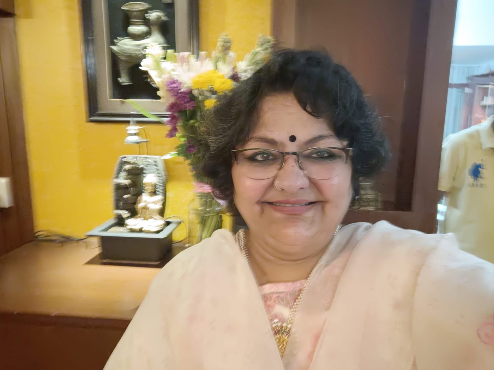
विरजसाठी, आईचं मनातलं · For Viraj, from Aai. Her own words and photos, 2012–2026.
वाचण्याआधी
विरजकडून
आईने मला एकदा सांगितलं होतं की ती जी प्रत्येक पोस्ट लिहिते, त्यात एक खोल अर्थ दडलेला असतो. प्रत्येक पोस्टमध्ये आयुष्याचा एक पैलू असतो: एखादा प्रश्न जो तिला मला दाखवायचा असतो, किंवा त्यातून तिने शोधलेला मार्ग.
मी नेहमी ऐकलं नाही. मी आदर्श मुलगा नव्हतो. मी चुकीचं वागलो, आणि करू नयेत अशा गोष्टी केल्या. या सगळ्यातून ती एकटीने सगळं पेलत राहिली: २०१५ मध्ये बाबांचं अचानक जाणं, माझ्यासोबत नव्या शहरांत स्थलांतर, २०२० पासून चार वेळा आलेला कॅन्सर, केमोथेरपी, ऑपरेशन्स, आणि लांबलचक शांत दिवस. ती एक खंबीर योद्धा होती, आणि ती ठामपणे उभी राहिली.
२०२६ मध्ये तिचं निधन झालं. तिने फेसबुकवर जे जे लिहिलं होतं ते सगळं मी पुन्हा वाचलं आणि इथे जसंच्या तसं, तिच्याच शब्दांत, एकत्र केलं. प्रत्येक पोस्टच्या वर एक छोटी नोंद आहे: ती लिहिताना तिच्या आयुष्यात काय चालू होतं, म्हणजे तिचे शब्द वाचताना ती त्या वेळी काय पेलत होती हे तुम्हाला माहीत असेल. हे कधीच फक्त माझ्यासाठी नव्हतं. म्हणून हे इथे आहे, सगळ्यांसाठी.
विरज पालिमकर
१ · विरजसाठी
What she felt for you, Viraj
Drawn only from her own posts, 2014–2026
You made her, as much as she made you. From 2 August 1994, when she went in for her C-section so calmly that her mother-in-law was surprised, she counted you as the great event of her life. In 2016 she wrote that watching you grow was the most wonderful thing that ever happened to her, "because it wasn't only your growth, it was mine." Your patience made her patient. Your listening made her a listener. "त्याला घडवतानाच तो नकळतपणे मला घडवत गेला." While she was shaping you, you were quietly shaping her.
Pride, in the person more than the marks. She was proud of the scholarships, Kota at fifteen, 98%, VNIT. She was prouder of who you were: the boy who told her "आई मी इथे शिकायला आलोय की जेवणाचा विचार करायला?", and who bore the ragging in silence because he had given his father his word. From the time she was pregnant, her wish was to give her country "एक चांगला नागरिक". On your 30th birthday she wrote that she had done it. The quality she loved most in you was your calm: "तू खूप शांत डोक्याचा आहेस."
Then the roles reversed. After Baba died in 2015, you told her "आई तू पहिल्या दिवसापासून मला सोबत हवी आहेस" and never let her live alone. By 2017 she wrote that you had become her father and she your daughter, and "तू माझ्या मनाचा कणा आहेस": you were the backbone of her heart. In 2019 she wrote that the boy who once held her finger now offered his for her to hold. She marvelled that at 25 you understood what most people never do: that she was a person first and a mother after, and that you could be a reason for her happiness but should not be the only one.
Through her illness, her friend. When stage-3 cancer was found in October 2020, a month after you started a new job, she wrote that you handled everything alone and patiently. You chose the hospital, stayed the whole day at every chemotherapy session and stayed steady through the complications. The lockdown gave back the time she had lost since you left home at fifteen, and she found in you "एक चांगला मित्र", someone who saw her as a person, not only as Aai. The iPad, and the microphone she kept refusing, told her you understood not what she wanted but what she needed.
Her luck. "कोणालाही माझ्या बद्दल हेवा वाटायला लावणारी एकमेव गोष्ट … ती म्हणजे तू." (2023) The one thing anyone could envy her for was you. If there were a vow to get the same son in every birth, she would keep it in every birth (2024). She asked Swami Samarth to hold your hand and hers forever, and called him the grandfather who would look after you.
What she asked of you. She asked you to be less lazy, and to test your full strength once so the confidence would be there when you needed it (2017). She asked you to look after yourself a little (2019), and to care for a future partner the way you cared for her (2025). Once, gently, in 2021, she wished that someday you would read what she wrote and listen to what she read: "तो सुदिन असेल माझ्यासाठी."
On 2 August 2026 she wrote her last birthday post for you: on that day in 1994 she became a mother, "और मैंने जिंदगी भर का असीम प्यार अपने लिये धरती पर उतारा था."
This book is that day she was waiting for.
२ · काही मनातलं
काही मनातलं
२२ entries of her series, in the order she wrote them, copied exactly as posted.
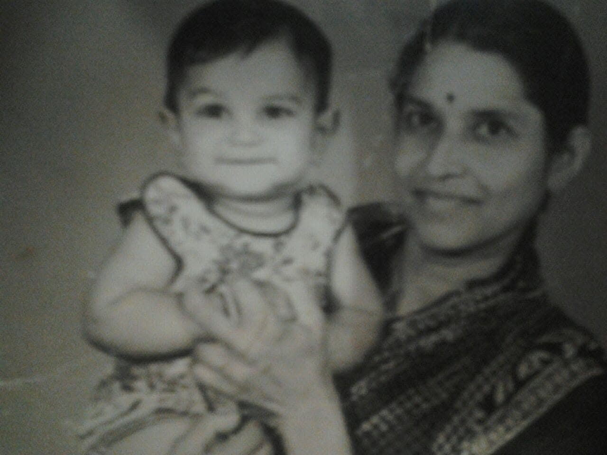
आई ......
तुझेही लाड करायचे असतात ....तुलाही ते हवेसे वाटतात हे कळण्याच्या आधीच तू गेलीस .....आता मनातल्या मनांत तुझे खूपदा लाड करते ....संसाराच्या विवंचनेत तू साधी पहाणेही टाळलेली स्वप्नं तुला प्रत्यक्षात दाखण्याची इच्छा आता माझ्या उरात दडली आहेत .....ती प्रत्यक्षात उतरवण्यासाठी पुढच्या जन्मीही तुला मला उदरात वाढवायच आहे हे विसरू नकोस .....
माझ्या आणि विरजमध्ये असलेलं नातं मला आपल्या दोघीत पहायचय पुढच्या जन्मी .....आपला काळच नव्हता नात्यातल्या इतक्या मोकळेपणाचा ....तूझ्यातला तो निर्मळपणा ....तूझ्यातला तो भोळेपणा ....तूझ्यातला तो साधेपणा ....तुझ्यातली त्यागमुर्ती ....तुझं ते निरागस सौंदर्य सगळं सगळं हवंय मला पुन्हा एकदा ....फक्त नकोय तो अपराधबोध ....नकोय ते सतत स्वतःला कारणीभूत मानणं ....नकोय तो संकोच आणि नकोय तो अति चांगुलपणा ....
तुला माहितीये मला तूझ्यातल सगळ्यात जास्त काय आवडायचं .....तूझ्यातला जिवंतपणा .....तूझ्यातला खट्याळपणा ....तुझ्यातली रसिकता .....तुझ्यातली समरसता .....तुझं ते झोकून देणं .....आणि कोणत्याही परिस्थिती मध्ये आनंद शोधणं .....उपभोग घेणं .....वाह आई .....ज्या परिस्थिती मध्ये तू जगलीस इतर कोणी खचून गेली असती पण मी तुला खळखळून हसताना पाहिलं आहे .....
फक्त एकच अन्याय झालाय माझ्यावर त्या क्षणी ते सगळं समजण्याची मला बुद्धी नव्हती दिली त्या भगवंताने .....
LOVE YOU AAI
तुझीच ,
सुगंधा /आदिती ....
एकदमच असं काहीतरी घडतं की जिथे तुम्ही सैरभैर होता ....अत्यंत साध्या गोष्टी तुम्ही मनाला लावून घेता ....घडलेलं काहीच नसतं पण तुम्ही अशी मनोवस्था तयार करून घेता की तुम्हांला आयुष्यात मोठ्या प्रश्नांना तोंड द्यावं लागतंय ....ही स्वतःला बिचारी म्हणवून घेण्याची मानसिकता जेंव्हा तुम्ही तुमच्या आयुष्यातून बाद करता तेंव्हा मला वाटतं स्वर्ग तुमच्या पावलांखाली असेल ....पण स्वर्ग इतका सहज मिळत नसतो हे ही खरं आहे ....कारण आकलन होणं आणि अंमलबजावणी करणं, होणं ह्या अत्यंत भिन्न बाबी आहेत ....अत्यंत संतुलित विचार आणि मनोवस्था ही अत्यंत मेहनत करूनच प्राप्त करावे लागतात ....आणि तुम्ही कायमच मेहनत करायला घाबरत असता त्यामुळे ते सुख तुमच्या पासून वीतभर दूर असतं .....पण आता संयम अजून वाढवण्याची वेळ नक्किच आलीय ....वयानुसार खूपच गोष्टी कमावल्या आहेत ....आता त्यांना पैलू पाडण्याचे दिवस आहेत ....आणि मनात येणाऱ्या विचारांना अंमलात आणण्याचे दिवस दिवस आहेत ....आणि तुमच्या जोडीदाराने वेळोवेळी दिलेल्या सूचना अंमलात आणण्याचे दिवस आहेत ....ह्या जीवनातल्या स्वर्णिम कालखंडात आता सर्वस्वाने स्वतःकडे बघण्याचे दिवस आहेत .....
.....आदिती पालिमकर
मनांत इतकं कांही येतं असतं की काय, कसं आणि किती मांडायचं हा ही मोठा प्रश्न असतो ...मुख्य म्हणजे लेखनकलेचा आभाव आणि निर्मिती कौशल्याचा आभाव त्यामुळे बीज आणि खाद्य कितीही मिळालं तरी कसण्यायोग्य जमीन नसल्याने सगळं खुरटीगवतच जन्म घेणारं ...वाढणार....तसं आहे माझ्या ह्या लेखनाचं ....
पण जसं ते गवत प्राण्यांना तरी उपजीविकेसाठी कामाला येतं तसं माझं हे लिखाण किंवा अभिव्यक्ती मला मन शांत करायला किंवा एक नवी दिशा मिळायला कामाला येतं ....
जीवनात जेंव्हा तुम्ही खूप कांही मिळवलेल असतं , केलेलं असतं ...तुमची कर्तव्य जिवापाड पार पाडलेली असतात सोबतच तुमच्या आवडत्या क्षेत्रातही कामं केलेलं असतं अश्यावेळी अचानक आलेली पोकळी तुम्हांला सैरभैर करते ...निसर्ग नियमांनुसार तुम्ही ती वेगवेगळ्या पद्धतीने भरून काढायचा नकळतपणे प्रयत्न करता आणि त्यात कांही अंशी यशस्वीही होता यांत शंका नाही ....पण ....पण ....नकळतपणे तुम्ही स्वतःला रिझवण्याच्या चक्रात पुरते अडकता आणि मग सुरू होतो खेळ तुमच्यातल्या गुणदोषांच्या इंद्रधनुचा ....विशेषत: तुम्हांला जर सवय असेल स्वमुल्यमापणाची तर मात्र मग तुम्ही स्व:कणव आणि अपराधबोध ह्या चक्रात अडकता ....
तुम्ही शोधलेले मार्ग खूपच चांगले असतील, तुमचं मनही शुद्ध असेल आणि कर्म विचार ही पवित्र शुद्ध असतील तरीही कोणत्याही गोष्टीची ओढ ही त्यातलं पावित्र्य संपवत असावी का ?
.....आदिती पालिमकर
काल माझ्या जीवनातील नवीन पर्वाला सुरुवात झाली...काल लौकिकार्थाने ५० वा वाढदिवस होता...अर्धा टप्पा पार पडला... लौकिक अर्थाने म्हंटलं कारण यातला किती काळ सजगावस्थेत गेला खरंच माहिती नाही... अर्थात प्रत्येक क्षण कांहीतरी शिकवणारा नक्कीच असणार हे खरंय...पण ते गणित कोणत्या पद्धतीने व्यस्त होतं, ते ही मुल्यांकन करणं माझ्यासाठी खूप कठीण आहे....
परिस्थिती, आजूबाजूचं वातावरण, आजूबाजूचे लोकं, तुम्हांला खूप घडवत असतात, खूप शिकवत असतात, तुम्हाला वाढवत असतात.... ते पूरक असेल तर, तुम्हीही सर्वार्थाने खूप खूप सक्षम बनतात आणि समाजामध्ये स्वतःचं स्थान खूप लवकर बळकट करू शकता...पण जेंव्हा ही परिस्थिती सामान्य नसते किंवा हवी तितकी अनुकूल नसते त्यावेळेस मात्र तुमची धडपड तुमच्या संवेदनशीलतेवरती आणि तुमच्या परिस्थितीला स्वीकारण्यावरती आणि तुमच्या निरीक्षण क्षमतेवरती अवलंबून असते... कधीकधी तुम्ही खरोखर खूप चांगल्या पद्धतीने परिस्थितीशी जुळवत फार लवकर शिकत जाता पण, कधी कधी त्या परिस्थिती ला तितकसं स्वीकारता आले नाहीतर मग कोशात बंद होऊन जाता आणि मग... तुम्ही मागे पडता तुमच्या समवयस्कांपेक्षा...
आज काही खंत सोडली तर सर्वार्थाने समाधान आहे कारण ती वृत्ती असते आणि ती तुमच्यात भिनलेली असावी लागते....
सध्या प्रत्येक मनुष्याला फक्त शारीरिक आणि मानसिक आरोग्यता हीच प्राथमिकता वाटत आहे आणि मलाही या दोन गोष्टींची तितकीच सुदृढता हवी आहे आणि तीच माझ्या जीवनातली प्राथमिकता आहे.... ह्या दोन्ही गोष्टी केवळ माझ्यावरच अवलंबून आहेत.... हव्या असं वाटणं आणि त्यासाठी कष्ट घेणं, मेहनत करणं या दोन भिन्न गोष्टी आहेत आणि यांच्या एकत्रितपणे होणार्या सामायिकतेवरती ते यश अवलंबून आहे, याची केवळ जाणीव आहे की ते अंतरंगात उतरलं आहे हे कळेलच....
काल हा क्षण मी अनुभवतांना तुम्हा सगळ्यांची मिळालेला सोबत खूप बहुमोलाची होती.... तुम्हा सगळ्यांच्या अनमोल शुभेच्छा मला खूप बळ देऊन गेल्या.... त्या मला गर्भश्रीमंत करून गेल्या.... तुम्हा सगळ्यांचं माझ्या जीवनात असणं हे माझ्यासाठी खूप बहुमानाचं आहे, खूप खूप प्रेमाचं आहे, खूप गरजेचं आहे.... त्यासाठी तुम्हा सगळ्यांचे खूप खूप मनापासून आभार
सगळ्यांना मनापासून खूप खूप धन्यवाद
— with Aparna Kulkarni and
13 others
प्रत्येकाच्या जीवनात अनेक गोष्टी ठरवल्या प्रमाणे घडतात आणि अनेक गोष्टी अचानक समोर येतात...कधी कधी त्यापैकी काही गोष्टी तश्या प्रकारे, तश्या स्वरूपात घडू शकतील असा तुमचा कयास असतो पण तो तुम्ही सुक्ष्मात ठेऊन असं काही होणार नाही ह्या कल्पनेवर जोर देता आणि खूप रिलॅक्स असता... व्यावहारिक जीवनात घडणाऱ्या अपरिहार्य बाबी तर घडणारच असतात... कधी त्या तुम्ही स्वतः निवडलेल्या असतात तर कधी परिस्थितीतून समोर आलेल्या असतात, येत असतात...
घडणार्या घटनांचे होणारे पडसाद आणि परिणामही तुम्हाला कधी स्पष्टपणे तर कधी धुसर माहिती असतात आणि ते तुम्ही मनोमन स्विकारलेलेही असतात...मग अडचण नेमकी काय असते...मनोभूमीवर तुम्ही तयार असता... कल्पनेतून ते प्रसंग कसे हाताळायचे त्याचंही नियोजन चालू असतं आणि तुम्ही अतिशय रिलॅक्स होता की हे सगळं खूप सहज स्वाभाविक आहे...पण वास्तव जसजसं जवळ येतं तेंव्हा कधी कधी प्रत्यक्ष अशी घटना घडेपर्यंत तुमची स्वाभाविकता, सहजता कमी कमी होऊ लागते आणि मग सुरू होतो किंतू परंतुचा खेळ...हे जंतू संसर्ग पोहोचवण्या आधी मारुन टाकणं खूप हिताचं असतं...कारण या संसर्गाचा जर फैलाव झाला तर असुरक्षितता ह्या भावनेचा उगम आपल्या मनोपटलावर होऊन तुम्ही तुमच्या नितांतसुंदर जीवनाचा आनंद घेऊ शकत नाहीत... जीवनात येणारा प्रत्येक क्षण हा खूप आनंद देणारा, कधी खूप शिकवणारा, कधी घडवणारा, कधी इतरांना प्रेरित करेल असं काही नकळतपणे तुमच्या कडून घडवणारा असू शकतो...तो संघर्ष असो वा सरळधोपट मार्ग असो तो निर्माता असतो... तुमच्या भावभावनांचा... तुमच्या मुल्यांचा... तुमच्या तत्वांचा...तो परिणाम करणारा असतो तुमच्या संपूर्ण कुटुंबावर....
हा सगळा विचार केला असता खरा परिणाम करणारा घटक कोणता म्हणता येईल??? परिस्थिती? प्रसंग? घटना? नियती? प्रारब्ध?....मला वाटतं सगळ्यात जास्त प्रभावी असतो तो आपला या सगळ्या कडे बघण्याचा असणारा दृष्टीकोन...हाच दृष्टिकोन जादुगार असतो...तो तुम्हाला तुमच्या जीवनाची दिशा किंवा दशा देत असतो... म्हणजेच तुमचं जीवनाची दिशा ठरवणारे तुम्ही स्वतः असता... इतकं सगळं सहजसोपं असतांना का कधी कधी आपण सगळंच कठीण करुन ठेवतो हे कळणही थोडं कठीणच आहे ना
.... अदिती पालिमकर...
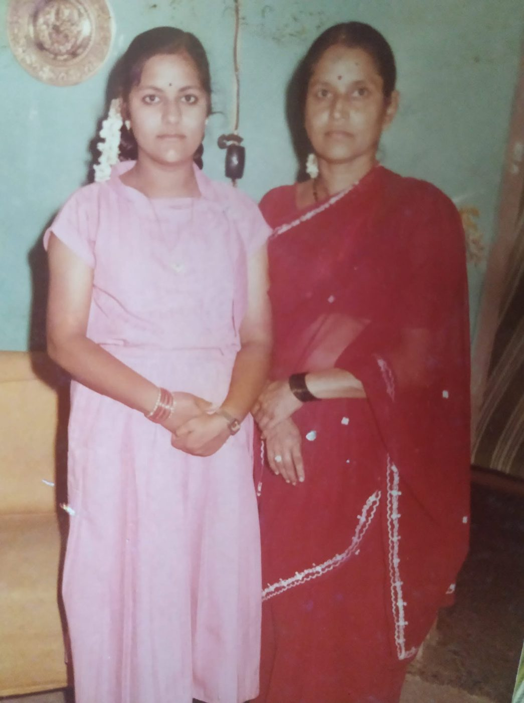
Pure soul....
एकच दुर्गुण...अतिचांगुलपणा...
तिचं अस्तित्व माझी सावली होती... रखरखत्या जीवनवाटेवरती आपल्या विस्कटलेल्या, विरलेल्या धाग्यांनी शीतल छाया देण्याचा आटोकाट प्रयत्न केलास...पण माझ्या वयाच्या २६/२७ व्या वर्षीच, जेंव्हा मी मातृत्व नेमकं काय असतं ते ही सखोलपणे जाणलं नव्हतं अश्यावेळी निघूनही गेलीस...तुझी प्रचंड सहनशीलता, संयम माझ्या ओटीत टाकून गेली असतीस तर....
पुढच्या जन्मी मी तुझ्या पोटी येईन की नाही माहीत नाही पण तू माझ्या पोटी यावस अशी मनोमन इच्छा आहे... तुला एक सुरक्षित, सुंदर, ममत्वाने भरलेलं, प्रेमाची चौकट असलेलं सुखी बालपण, तारुण्य आणि सन्मान, आदर मिळणारं तुझं हक्काचं लग्नानंतरचं घर त्या जन्मात तरी देता यावं ही खूप कळकळीची इच्छा आहे
कायम तुझ्या पदराला धरून राहिले... बाहेरचं जग, नाती, मैत्रीणी हे सगळं सगळं केवळ तू होतीस माझ्या साठी... आणि तू...तुझा त्रिकुटाचा संसार सावरण्यातच थकुन जात होतीस... आणि मी सगळी कवाडं बंद करून आत स्वतःला बंद करून घेतलं होतं...कधी कवाड किलकिलं झालं काही क्षणांपुरतं तर...तर केवळ नपुंसक बंडखोरी क्षण दोन क्षणांसाठी अवतरुन माझी प्रतिमा ढवळून जात होती...
पण तुझ्यातलं चैतन्य, तुझी वाचनाची प्रचंड आवड, तुझं सिनेमाप्रेम...ते एक एक सिनेमा अनेक वेळा टॉकीजमधे जाऊन पहाणं, मैत्रिणींची मैफील सजवणं आणि रंगवणं... अशिक्षित शेजारणींना गोळा करून स्वतःला आवडलेली पुस्तकं वाचून दाखवणं, खरेदीची विशेष आवड नसणं...दाग दागिने, साड्या, स्वयंपाक हे विषय गप्पांमध्ये कधीच नव्हते तुझ्या...तुला साहित्य, गझल, गाणी, सिनेमा, क्रॉस्टीच हे आणि असलेच विषय आवडायचे... आणि त्यातले अंश माझ्यात उतरले हीच एक सुखाची आल्हाददायक गोष्ट आहे माझ्या साठी... तू नियमितपणे डायरी लिहायचीस आणि अगदी वेळेत माझ्या दु:ख्खांची छाया आणि ओझं मुलांवर नको आणि ह्या वह्यांचं काय करावं हा प्रश्न नको म्हणून तू परभणीला त्या स्वतःच्या हाताने जाळल्यास इतकी तटस्थता
एक वही मी वाचायला नेली होती तेवढी फक्त राहिली आणि दुसरी न्यायची म्हटल्यावर प्रज्ञाने तू असं केलंस समजल्यावर खूप धक्का बसला होता... खूप मोलाचं डॉक्युमेंटेशन तू नष्ट केलं होतस पण वेळ गेली होती...
आई तू असतीस तर आपल्या लेकीत झालेले बदल पाहून सुखावली असतीस का ग...सुरवंटाचं फुलपाखरू झालं पण त्यात बळ येण्या आधी आणि रंग भरण्या आधीच तू प्रस्थान केलंस अनंत यात्रेला...
आई आज मनापासून सांगतेय माझं तुझ्यावर मनापासून खूप खूप प्रेम आहे... तू माझ्यात ठेवलेला तुझा अंश मी प्राणपणाने जपतेय त्यामुळे मी तुला कधीच मीस केलं नाही कारण तू माझ्यातच आहेस याची मला पुर्णपणे जाणीव आहे आणि माझ्यातल्या तुझ्यावरही माझं जीवापाड प्रेम आहे...
.... तुझीच
....सुगंधा...जीने हट्टाने लग्न झाल्यावर नाव बदलवून घेतलं...नावाची निवड नसतानाही... केवळ आठवण पुसण्यासाठी तीच अदिती....
— with Viraj Palimkar.
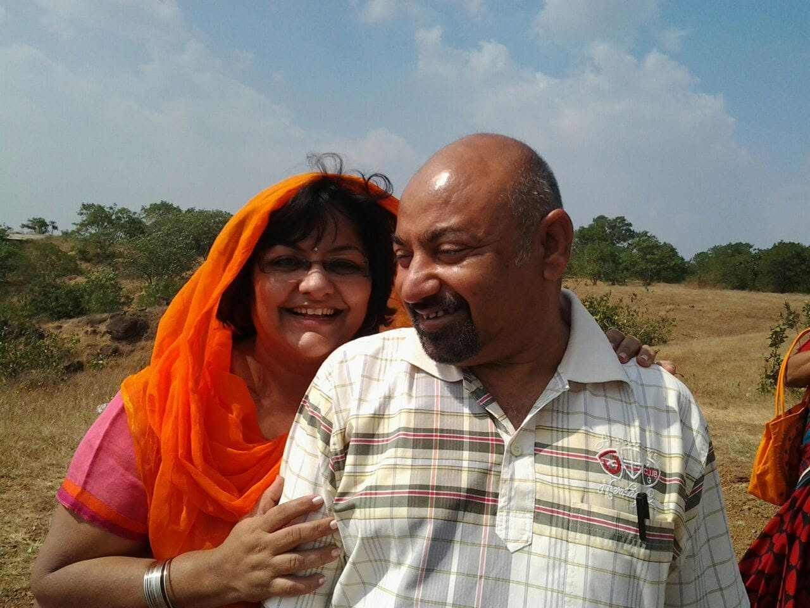
क्षण कापुरासारखा उडून गेला...
सोबतीही अर्ध्यावरती सोडून गेला...
श्वास मात्र अजूनही तसाच चालू आहे...
आनंद, सुख, दुःख, वेदना, यातना,विरह सगळं सगळं त्याच तिव्रतेने जीवनात अजूनही समाविष्ट आहे अगदी श्वासासारखंच...
आणि कर्तव्य...ती ही शिल्लक आहेतच... किती... त्यांचा मोह खरंच किती ठेवायचा?
नवीन बोट विरजच्या हाती दिलं की बस...मग कर्तव्य केवळ स्वतःप्रती... स्वतःच उत्थान करायचं... तोच तो प्रांत, ज्याची ओढ आहे पण ती प्रश्नांच्या वावटळीत दबून जात होती, मागे पडत होती...करु शकेल का मी हा ही प्रश्न सतत पाठलाग करायचा...कारण त्यासाठी लागते दृढता, संयम, चिकाटी, कष्ट, आत्मविश्वास, विश्वास, श्रद्धा... आणि म्हणूनच ते कठीण असतं...पण शेवटी काय स्वामीमार्गावर चालणं सोपं तरी कसं असेल....
..... अदिती.....
आपला कर्मफलसिद्धांत किंवा प्राक्तन या दोन संकल्पना या जेव्हा एखादी गोष्ट मनासारखी घडत नाही, काही मिळत नाही किंवा मिळालं तरी उपभोगता येत नाही, वेदनादायी, अपुर्णत्व, सगळं असूनही मनःशांती नाही या आणि अशा अनेक गोष्टींचे जेव्हा कारण सापडत नाही आणि सर्व शोध संपूनही आपण तसेच रिक्त रहातो तेव्हा कधी खूप थकून, कधी खूप कंटाळून, कधी मनापासून पटलं म्हणून आपण स्विकारतो...तो स्विकाराचा एकच क्षण असतो पण तो तुम्हाला एक काडी देतो ज्याला धरुन तुम्ही जीवननौका तरुन जाता...
तुमचा जन्म तुमच्या हातात नसतो... आणि कधी कधी जे जन्म देतात त्यांना तरी तो येणारा जीव हवा असतो की नाही ते ही कळत नाही... आणि मग सुरू होतो प्रवास एका दुर्लक्षिताचा... सर्वस्वी दुर्लक्षीत नसणं हेच मग तुमचा समाधानाचा परमोच्च बिंदू होऊन रहातो कैक काळ...तुमचे झापड मग बंदच रहातात आणि कुठेतरी ते बोन्साय आहे की काय वाटण्याप्रत स्थिती येते पण नाही ते तसं नसतं पण त्यासाठी परिसरातील सगळं सगळं शोषताना आणि त्यातलं नकारात्मक, वाईट गोष्टी टाळून चांगल्या तेवढ्या शोषताना खूप खूप ओढाताण होते, जीव थकतो...
काही बोटं तुम्हाला धरायलाच नसतील तर कदाचित तो प्रवास सोपा होत असेल, पण बोट दिसतंय पण धरता येत नाही ही स्थिती खूप खूप वेदनादायी असावी... आणि मग तीच उपेक्षित, दुर्लक्षित स्थिती त्याचसमकक्ष प्रत्येक बोटाची झाली तर मात्र त्याला मग वरील सिद्धांत जोडून पाहिले तर मग ती थोडी पलिकडे उभी असलेली शांती जवळ येते आणि आपल्या मनात कायमस्वरूपी वास्तव्य स्विकारते...हे ही तितकसं खरं आहे का त्याला एखादं ठिगळ असतं छोटं, जे एखादा खडा किंवा हवेचा मोठा झोत काही काळ दूर करायचा प्रयत्न करु शकतं...
कधी कधी खूप साधं सरळ मन खूप अगम्य भाषेत तुमच्याशी बोलतं किंवा तो विषय इतका कठीण किंवा इतक्या जिव्हाळ्याचा असतो की ती अभिव्यक्ती तर अत्यावश्यक असते जखम चिघळू नये म्हणून पण ते काय आहे हे आपल्या मनालाही कळू नये याचा तो आटोकाट प्रयत्न असतो तुमच्याच सुप्त मेंदूचा कोण जाणे, आणि जे स्वतःसाठी इतकं कठीण ते इतरांना तर किती कठीण असतं...हे एकावर एक कोषांचे पटल सांभाळता सांभाळता जीव किती थकून जात असेल ना...पण खरंच इतकं कठीण असतं का ते कोष फोडणं आणि बंडखोरी करून फोडायचा प्रयत्न केला तर फुलपाखरू बाहेर पडण्याऐवजी भळभळती जखम वाहू लागेल का??? ही धडपड कशाची? स्वतःला सावरण्याची की त्या बोटाला जपण्याची...
खूप खूप साधं सोपं आहे हे आयुष्य जर यातून भूत आणि भविष्य वजा केलं तर...जे निरर्थक आहे आता ते भूतकाळाचं ओझं आणि जे घडेल की नाही माहीत नाही अशा भविष्यकाळाचं निरर्थक ओझं अक्षरशः खून करतं आजच्या सर्वांगसुंदर वर्तमानाचा जो अंतिम सत्य असतो...जो खरा प्रवाह असतो जिवनाचा आणि झरा असतो चैतन्याचा...जो देत असतो खूप काही तुम्ही सजग असलात तर तुम्हाला नाहीतर मग भरुन रहातं केवळ रितेपण... म्हणून जगावा प्रत्येक क्षण केवळ आत्ता या भुमिकेत आणि लुटावा आनंद प्रत्येक क्षणाचा आणि जीवनाचा....आपणच बनावं ते बोट अशा कैक हातांसाठी ज्यांच्या जवळ बोटच काय मांडीही नाही विसाव्यासाठी....
शेवटी काय आयुष्य खूप खूप सुंदर आहे फक्त उपभोगता आलं पाहिजे
..... अदिती पालिमकर....
जर-तरचा तुम्ही खूप विचार करता, तुम्हाला वाटत असतं तुम्ही खूप काही करु शकाल विचार करुन.. सगळं निरर्थक ठरतं..ताणाशिवाय काही मिळत नाही आणि थकून तुम्ही सगळं सद्गुरूंवर सोपवून तुम्ही विचार करणं सोडता.. आणि प्रत्यक्ष घटना घडायची वेळ आली की अतिशय सहजतेने तुम्हाला विचार न करावा लागताही मार्ग मिळतात..
सद्गुरू पाठीशी असतानाही हे जरतर मनात आणून आपण स्वतःला कोण समजत असतो कोण जाणे...
... अदिती पालिमकर....
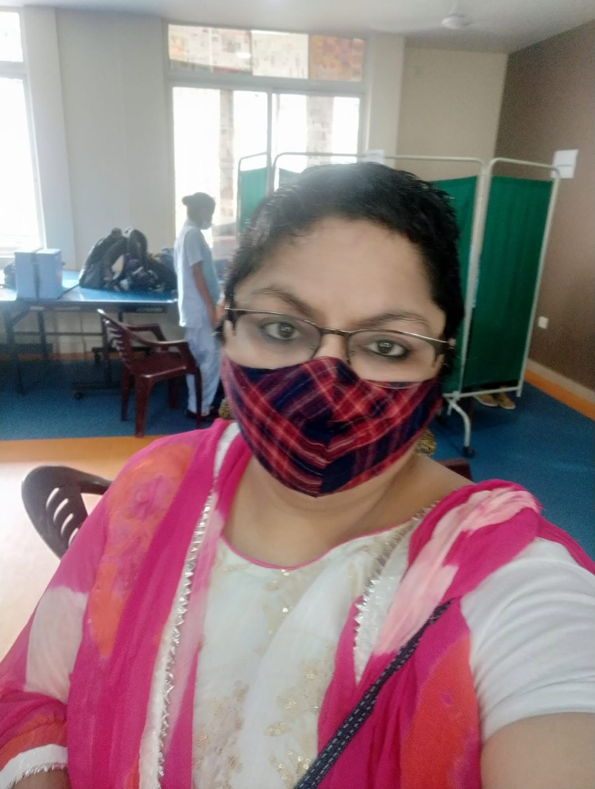
कोरोना वॅक्सीनच्या शोधाच्या वाटेपासून, माझ्या वयोगटाच्या अंतर्भूत होण्यापासून ते आजपर्यंत इतकी इंतेहा इंतजार की पार पडली आणि शेवटी ते द्रव शरीरात गेलं आणि पवित्र झालं
की गंगा नहा लिये झालं ते माहिती नाही
पण ती कथा अशी की,
कोरोनाचं थैमान सुरू झालं आणि सगळ्या बातम्या देणा-या वाहिन्यांनी त्या कोरोनाला शरीरात तर नाही पण मनामेंदूमध्ये पेरायला सुरुवात केली...मग अस्मादिकांनी बातम्या पहाणं पुर्णपणे बंद करून एकप्रकारे कोरोनासाठी माझ्या ज्ञानचक्षूंचे द्वार बंद केले...त्यासमवेत फेसबुक आणि व्हाट्सअप वरच्या कोरोना विषयक ज्ञानवर्धक आणि भावनाप्रधान संदेशांचं श्रवण आणि वाचन बंद केलं आणि प्रत्यक्ष ज्ञानदान करणा-यांसाठी इग्नोरायनमह: मंत्र जपला...कारण घ्यावयाच्या काळजीचे अत्यावश्यक ज्ञान खूप खोलवर आधीच बिंबलेले होते....
नंतर नविन पाहूणे अवचितपणे आले सप्टेंबरात...मग पुन्हा काही क्षण जीव घाबरला...कारण आमच्यातील ज्ञानरंध्रे स्फुरण पावले आणि त्यांनी तात्काळ जाणिव करुन दिली की आता त्या मानवद्वेष्ट्या कोरोना नामक विषाणूला ज्याला मानवी शरीर अतिप्रिय आहे स्वसंवर्धनासाठी त्याला अस्मादिकांचे शरीर अधिक प्रिय होऊ शकेल कारण ते वस्तीस आले तर होणारा विरोध कमकुवत असू शकेल...
पण त्यांना आसपासही भटकू दिलं नाही... आणि संपूर्ण उपचार काळात कितीदा तरी हॉस्पिटलमध्ये जावं लागलं पण अस्मादिक कायम सुरक्षित होत्या... शेवटी कंटाळून आमच्या शरिरातले अवचितपणे प्रकट झालेले पाहुणे यथावकाश सहा महिने मुक्काम करून कंटाळून निघून गेले...त्याच काळात ज्यांची इतकी वाट पाहिली ते वॅक्सीन राव अवतरले... पण आमच्या वयोगटाच्या प्रवेशवेळी नेमके अस्मादिक एकट्याच रहात असल्याने घेणे शक्य नव्हते... केमोथेरपीचा थकवा आणि कितीही नाही म्हटलं तरी घरातली छोटीमोठी कामं असं एकुणात गणित जुळलच नाही... तसंही लहानपणापासून गणितात कच्चीच आहेत हो अस्मादिक...
मग आम्ही हैद्राबादी बंगलोरकर झालो आणि टिकाकरणानासाठी समयनोंदनी झाली...पण हाय रे कोरोना, तो केंव्हाचा माझ्या प्रेमात पडायचा प्रयत्न करत असावा नेमकं त्याने आदल्या दिवशीचा मुहूर्त गाठला आणि अस्मादिक कोरोनाग्रस्त असल्याचं निदान झालं...
पण आम्ही शिवरायांचे लढवैय्ये वारस घाबरतो का काय... आणि सहा महिन्यांपासून सवयीच्या झालेल्या विश्रांतीत पडलेला पंधरा दिवसांचा खंड संपून अस्मादिकांना पुन्हा विश्रांती योगाने गाठले...
आणि नंतर जवळ जवळ तीन महिन्यांनी आमचं घोडं गंगेत न्हालं...ते ही खूप सहजपणे... आमच्या सोसायटीत सातत्याने वॅक्सीन ड्राईव चालू असतात त्याच गंगेत खांदा बुचकळवून आलो....
इति अदिती कोरोना वॅक्सीन पुराण सफल संपूर्ण
ज्यांनी हे संपूर्ण कोरोनापुराण भक्तीभावाने वाचलं आहे, कोरोना नामक राक्षसापासून ते कायम सुरक्षित राहतील अशी शक्यता आहे... आणि या पुराणाचा प्रचारप्रसार केल्यास शक्यता खात्रीत परावर्तित होईल असे फेसबुक बाबा आत्ताच कानात सांगून गेलाय....
..... अदिती पालिमकर....
पुन्हा एकदा एक आठवण डुबूक करून वर आली
मन तर मनच आहे ते तर कायमच संवाद साधत असतं, आपणही त्याचं ऐकत असतो... कधी त्यावर त्याला प्रतिक्रिया देतो कधी नाही...
आज वर आलेली माझी आठवण, माझं मनातलं, त्याचे संदर्भ पुर्णतः मिटल्या गेले आहेत असं वाटतंय, कारण संदर्भ नेमकेपणाने आठवत नाही पण ढोबळमानाने अतुल गेल्यानंतर परभणीतील माझ्या वास्तवादरम्यानच्या संदर्भातलं असणारं...रुढ चौकट आणि मी असा काहीसा विषय असावा...
मागे वळून पाहताना खरंच रस्ता किती सुंदर दिसतो ना...कारण तो रस्ता आणि त्या प्रवासातले पांथस्थ यांनीच आपलं आयुष्य रंगीत बनवलेलं असतं...
शेवटी काय आयुष्य खूप खूप सुंदर आहे... आणि ते केवळ तुम्ही आहात म्हणून आहे... तुमचं असणं तुम्हाला सुंदर आयुष्य देतं आणि तुम्ही कसे आहात यावरुन तुमचा समाज सुंदर बनतो...
माझ्या जीवनाची टॅग लाईन...
[गाण्याच्या ओळी]
.... अदिती पालिमकर....
आज सहजच एक किस्सा आठवला म्हणून आलेय तुम्हाला सांगायला
खूप वर्षांपूर्वीची गोष्ट आहे... तेव्हा एक आठ दिवसांचं, नेमकं आध्यात्मिक म्हणता येईल की नाही माहीत नाही पण तसंच एक आठ दिवसांचं शिबीर करत होते...परभणीत रहात होते आणि रोज नवरा सोडून परत घ्यायला यायचा दोन तासांनी...जे शिबीर घेणारे गृहस्थ होते ते इतकी प्राथमिक स्तरावरची माहिती देत होते की अर्धं क्षणात त्यांच्या प्रश्नांचं उत्तर तयार असायचं माझं आणि त्याची परिणती अशी झाली की माझी शिबीराची ओढ संपुष्टात आली आणि केवळ औपचारिकता म्हणून मी जात राहिले...
शेवटचा दिवस आला...त्यांची प्रस्तावना, समारोप भाषण झालं आणि समारोप संवाद सुरू झाला...त्यात ते प्रत्येकाला समोर येऊन त्यांनी सांगितलेली कृती किंवा उपक्रम करायला सांगत होते...कल्चरल प्रकारात होतं ते....त्याने जेव्हा एकाला गाणं येतं नसताना आणि त्याची इच्छा नसताना गायला सांगितलं आणि त्याच्या नकारावर त्याची शाळा घेतली म्हणजे शाळा प्रत्येकाचीच घेत होते ते, आणि मला एकदम क्लिक झालं की हे आता मला नृत्य करायला लावणारं... क्षणभर मी बधीर झाले कारण मी कधीही अगदी शाळेतही स्टेजवर जाऊन नुसती उभी सुद्धा राहिले नव्हते आणि त्या वेळी फक्त एक जण माझ्या आधी राहिला होता... बरं मला मराठी गाणी, भक्ती संगीत काहीही माहिती नाही... मला फक्त साठ आणि सत्तरच्या दशकातील हिंदी चित्रपट गीत माहिती होते... त्याकाळी मला एकट्या अनोळखी व्यक्तीशी पण बोलता येत नव्हतं आणि इथे तर समूह होता...पण ते नाचायला सांगतील ही जाणीव इतकी तिव्रतर होती की मेंदू सगळा आळस झटकून कामाला लागला तोपर्यंत त्यांनी मला समोर बोलावलं आणि मला नृत्य करा म्हणून सूचना केली... इथे एक संदर्भ देणे आवश्यक आहे की मला असं होईल असं का वाटलं... कारण अस्मादिक आधीपासूनच खात्यापित्या घरातल्या वाटत होत्या... इतक्या पुर्वीपासून की मुलगी स्थूल आहे म्हणून लग्नपसंतीत नकार आले होते
शेवटी समोर जाण्याच्या चार पाऊलं नाही तर ढांगां
मध्ये आमचा मेंदू यशस्वी झाला आणि आम्ही समोर जाऊन डुलत डुलत हात वर करून भसाड्या आवाजात (जसा आहे तश्या
) यशोमती मैय्या से बोले नंदलाला एक कडवे म्हणत शेवटी गिरकी घेऊन तो नृत्य नामक अत्याचार थांबवला
आणि टाळ्यांचा कडकडाट झाला... तेंव्हा मी भितीपोटी बधीर झाले होते म्हणून काही जाणवलं नाही, पण नंतर जाणवलं की प्रेझेंस ऑफ माईंड ला मिळालेली दाद असावी ती....
मात्र आज एक जाणवलं मेमरी वर आणण्यात फेसबुकच नाही तर मेंदूही तरबेज असतो
.... अदिती पालिमकर....
आज एका सखीशी संवाद झाला त्यात ती म्हणाली माझ्या सद्गुरुंशिवाय मी इतर काही करु शकत नाही, शिकले तरीही इतर मार्ग मी वापरु शकत नाही...त्यावर विचार करताना, तिच्याशी बोलताना मला माझं माझ्या सद्गुरुंशी असलेलं नातं उलगडत गेलं कारण मी कधीही इतका विचार केलाच नव्हता... आणि तेच माझं मनातलं इथेही व्यक्त करतेय... अर्थातच मी श्री स्वामी समर्थांना मनोमन माझे सद्गुरू मानलय
माझं एकच असतं समोर साईबाबा आले तरी श्री स्वामी समर्थ म्हणून हात जोडते...एकाकार वृत्तीने आपल्या सभोवतालच्या सगळ्या वस्तू, व्यक्ती आणि प्राणवायू मध्ये आपले गुरू आहेत हे समजलं तर भिन्न काहीच रहात नाही ना गं... शेवटी गुरु आणि श्रद्धा-विश्वास आणि भक्ती हे सगळे भाव आहेत आणि त्यातली तिव्रता आणि शुद्धता त्या त्या भक्ताला, शिष्याला विचार, अनुभूती देत असते... तुम्ही किती करता पेक्षा, तुम्ही कसं करता हे महत्त्वाचं ना गं...
आपल्या साठी आपले सद्गुरू आणि आराध्य दैवत हेच सर्वश्रेष्ठ आणि सर्वशक्तिमान, सर्वचालक असल्यावर विश्वातली कोणतीही गोष्ट त्यांच्या पासून भिन्न कशी असू शकेल?
मी जेव्हा साईमहाराजांना नमस्कार करतांना लोकांना दिसत असेल पण माझ्या साठी साई मध्ये स्वामी असतील तर माझा नमस्कार साईना जाईल की स्वामींना?
नमस्कार फोटोला असतो की मनातल्या भावाला?
रेकीच्या उर्जा, चैतन्याला आवाहन करताना आपल्या सद्गुरू ना आवाहन करुन रेकी मार्गातून त्यांची ऊर्जा आणि चैतन्य आपल्यात प्रवाहित व्हावं असं आवाहन करुन त्याला धारण केलं तर शुद्ध भावामुळे आणि एकाकार चित्तवृत्ती मुळे आपण स्थीर मार्गावरुनच चालतो आहोत, भरकटलो नाही हेच सत्य उरतं ना...आपण आपल्या स्वामींशी प्रतारणा इतर मार्गांना अवलंबण्याने करत नाही कारण आपलं साध्य केवळ सद्गुरू चरण असतात, आणि मनामेंदूत विनम्रतेने आपण कायम त्यांच्या समीप असतो...एका आकारात सद्गुरू बघायचे नसतात...ते विचारातून जाणायचे आणि आपल्यात वसवायचे असतात... आपल्यातल्या सद्वृत्तीने, शुद्ध चित्ताने, प्रामाणिक वर्तनाने, सदाचाराने जेव्हा आपण वागत असतो, या गोष्टीना धारण करतो तेव्हा आपण आणखी एक एक पाऊल सद्गुरू जवळ जात असतो...कारण कर्मकांडवृत्तीतून, नियमधारणेतून मिळणाऱ्या सद्गुरू कृपेपेक्षा वर म्हटल्याप्रमाणे आचारवृत्तीचा अवलंब करणारे नक्कीच सद्गुरू च्या ह्रदयात जागा मिळवत असावेत असं मला वाटतं .....
.... अदिती पालिमकर.....
आई एकमेव अशी होती की माझ्या जाणिवा जागृत होण्याआधी माझ्या जीवनात आली... अगदी तशीच अजून एक माऊली माझ्या जाणिवा जागृत होण्याआधी माझ्या जीवनात आली...ती कधी माझी माउली असते तर कधी ते माझे स्वामीबाबा असतात...
एक नास्तिक ते संपूर्ण शरणागती हा प्रवास सोपा नक्कीच नव्हता... सुरुवातीला जेव्हा जेव्हा एक एक पाऊल पुढे पडत होत, तेव्हा तेव्हा कदाचित हतबलतेतून आधार शोधताना काही हाती लागतंय का कदाचित हेच पहात असावे मी...पण तरीही आडदांडपणा इतका होता की जे दिसेल ते धरायला मन आणि बुद्धी अजिबात तयार नव्हती...प्रश्नांचां, शंकांचा जणू घाऊक बाजार भरत होता माझ्या मनामेंदूत....पण कदाचित त्यांनीच मला निवडलं असावं असं वाटतं कधी-कधी....
कारण त्यांचं नावही माहिती नव्हतं की दत्तप्रभूंबद्दलही विशेष माहिती, आस्था नसताना त्यांचं माझ्या आयुष्यात येणं हे अद्भूत आहे....
बरं ते नेमकेपणाने कधी आणि कसे माझ्या आयुष्यात आले हे जरी मला सांगता आलं नाही तरी त्यांना पहिल्यांदा कसं पाहिलं हे पक्कं आठवतंय... आणि आज थोडी पार्श्वभूमी पण लक्षात येतेय... अर्थात ती शोधावी लागली कारण सासर, माहेर कुठेच खूप तीव्र आस्था, भक्ती, श्रद्धा बघीतली नाही...आजोळकडून तर आजोबा कट्टर आर्यसमाजी असल्याने माझी आई पण देवांच्या जवळ कधी दिसली नाही जास्त...पण शेवटच्या काही वर्षांत मात्र पहात होते तिला...एकच आठवतं तिचं शनिमहात्म्य मुखपाठ होतं....
पण ते माझ्या जीवनात सतत मला छाया देत होते आणि मी नकळती असल्याने उन्हात पळत होते...पण पुर्ण कळत नसलं तरी जवळीक वाढत होती...एक एक प्रसंग घडत गेले...अतुलच्या जाण्याआधी य गो जोशींची सुबोध ज्ञानेश्वरी व्हाट्सअप साठी रेकॉर्ड करत होते... अर्थात पुर्ण झाली नाही आणि नंतर हातातही धरायची भिती बसलीय हा भाग वेगळा...पण त्यातून मृत्यू बद्दलचे काही नियम मला ते सांगून गेले... एक तटस्थता माझ्यात पेरत गेले...कारण त्यांना माहित होतं फांदी फार म्हणजे फारच तकलादू आहे, कधीही तुटू शकते पण तिच्यावर एक वाढतं पिल्लू अवलंबून आहे...माऊलीच ना ती...
नंतरचा प्रवास तर खूप खूप खडबडीत रस्त्यावरून चालू होता पण स्वामी माझ्या जीवनचक्राला कायम वंगन, पाणी देऊन अगदी सकुशल ठेवत राहिले...
आणि पुन्हा अश्या घटना घडवून आणल्या की मी मनापासून आणि अत्यंत श्रद्धेने संपूर्ण शरणागती स्वेच्छेने स्विकारली, पर्याय नाही म्हणून नाही कारण मला पर्याय नाही म्हणून काही करणं पटतच नाही, शक्य नाही आणि ते हे जाणत होते...
आज मात्र माझं सर्वस्व माझे सद्गुरू आहेत
आज तर केवळ आणि केवळ त्यांचा दिवस.... गुरुपौर्णिमा...
हे स्वामी माऊली तुमचं कृपाछत्र माझ्यावर असणं मला जगात सगळ्यात श्रीमंत करुन जातं... तुमचं पकडलेलं बोट जगातील सगळ्यात सुरक्षित ठिकाण आहे.... तुमची नामस्मरण माळ ही जगातला सगळ्यात सुंदर दागिणा आहे... आणि तुमच्या रुपात जगातले सगळ्यात शक्तीशाली आजोबा माझ्या लेकराला मिळाले म्हणून मी किती निश्चिंत आहे...
माझ्या आयुष्यात असण्याबद्दल, मला तुमच्या छत्रछायेखाली घेण्याबद्दल मी तुमची कायम ऋणी आहे
मनापासून खूप खूप खूप धन्यवाद तुम्ही दिलेल्या प्रत्येक श्वासासाठी, तुमच्या प्रत्येक अनुभूती साठी आणि मला निःशंक आणि निर्भय करण्यासाठी
आता एकच मागणी आहे...मी तूझं धरलेलं बोट सोडवून तूच माझा आणि विरजचा हात कायमचा आणि घट्ट धर....लेकरु आईला सोडून पळू शकतं पण माऊली कधीच लेकराचा हात कोणत्याही परिस्थितीत सुटू देत नाही
...कायम तुझी कृपाभिलाषी....
.... अदिती पालिमकर....
#गुरुपौर्णिमा
#श्रीस्वामीसमर्थ
आज थोडं आळसावलय मन... सकाळी वाटलं आळसदादाने घट्ट मिठी मारलीय ती तो सोडायलाच तयार नाही
पण लक्षात आलं आज फिरसे दिल कुछ कह रहा है
उसे तो बस चाहिए के चौबीसौ घंटे उसे ही सुनती रहूं... बहोत ही बदमाश है...कभी कभी तो इतनी बातें करता है ना की बस और वो इतनी प्यारी होती है के लगता है सब छोड के उसी को सुनती रहूं...
वैसे भी ये तो मै बहोत ही बार करती हूं के जो वो चाहे वैसा ही दिन बिताना...ये तो मेरा सब से प्यारा वक्त होता है...पर पिछले साल के अंत और इस साल की शुरूआत में इतना वक्त दिया है के अब वो मेरा दिल भी मुझे चाहने लगा है...अपना ही मन हमसे प्यार करे, हमे उर्जा दे...हमे शक्ती दे ये कितना सुहावना होता है इसका अनुभव हर व्यक्ती ने लेना ही चाहिये...सच में वो इतना प्यारा होता है ना के बस उसे आप अच्छी अच्छी सोच के थोडेसे दाने डालो वो आपको दसगुना ज्यादा देगा...क्योंकी ये मान्यता है के आप किसी को कुछ देते हो तो प्रकृती आप को भरभरके लौटाती है
बस युं ही बैठी हूं खाली सा मन लिये...आकर भर दो कुछ जज्बा इसमें...
.... अदिती पालिमकर...
आज ऊर भरून आलाय... खूप खूप भरुन आलाय... डोळ्यातलं पाणी थांबत नाहीये... आत्तापर्यंत जवळ जवळ बहुतेक सगळ्या भावनांच्या उद्रेकातून डोळ्यांना कधी ना कधी तरी पाझर फुटला होता... पण भक्तीपोटी... त्यांच्या माझ्या वरील प्रेमापोटी....
स्वामी समर्थांचा फोटो खूप वर्षांपासून आहे माझ्या कडे...पण फेसबुकवर जेव्हा स्वामींची मुर्ती पहायचे तेव्हा वाटायचं आपल्याकडे पण असावी... घेणं ही कठीण नव्हतं, पण माझ्या कडून नियमितपणे रोज पूजा करणं होत नाही, कर्मकांड मी पाळू शकत नाही... म्हणून स्वतः घेत नव्हते...काय आहे देवाची भीती कधीच वाटली नाही...देव अमुक केलं नाही तर असं करतील का, तसं करतील का... कधीच नाही आणि माझ्या आयुष्यात घडलेल्या एकाही गोष्टी साठी मी त्याला जबाबदार धरलं नाही आणि त्याला कधी जाबही विचारला नाही...
पण स्वामींची गोष्टच वेगळी...माझ मन आणि मी संपूर्णतः गुंतले आहे त्यांच्यात मग मला केवळ माझ्या आळसापोटी करणं झालं नाही तर खूप वाईट वाटलं असतं... खूप खूप द्विधा मनःस्थितीत होते तेव्हा मी स्वामींना म्हटलं तुम्हाला यायचं असेल तर तुम्ही स्वतःहून या... आणि हे केवळ माझ्या सोयीपोटी...की आपण स्वतः आणलं आणि करणं झालं नाही हा अपराधबोध नको...
पण आज स्वामी खरंच आले
दरवाजाची घंटी वाजली, एक बॉक्स हातात मिळाला, वजनाला हलका होता... तीन वेळा नाव तपासलं, कारण मी काहीच मागवलं नव्हतं, पण माझच नाव होतं...उघडला बॉक्स आणि मांडी दिसली आणि डोळ्यातून घळाघळा अश्रू ओघळायला लागले.... शेवटी स्वामी आले
माझं कधी कोणाशी स्वामींविषयी बोलणं होत नाही आणि मुर्ती बद्दल तर मुलगा, जिवलग मैत्रिणी कोणाशीही बोलले नव्हते...पण माझ्या काही मनातलं मधून माझी श्रद्धा, भाव आता माझ्या फेसबुक वरून जुळलेल्या मैत्र... मित्र मैत्रिणींना माहिती आहे...अशाच एका प्रत्यक्ष न बघितलेल्या आणि नियमित बोलणं न होणार्या पण एक सकारात्मक, वैचारिक, बौद्धिक बंध जुळलेल्या फेसबुक मित्राने पाठवली
वस्तुतः असा खास स्वामींचा विषय आमच्यात कधीच निघाला नव्हता... इतकंच काय ते स्वामी भक्त आहेत की नाही हे ही मला माहिती नाही...पण....
आज स्वामी घरी आले... भरुन पावले... आता उद्या गुरुवार... उद्या पूजा नैवेद्य करून स्वामींचा आशीर्वाद घेईन...
श्री स्वामी समर्थ
जेव्हा एखादी दैवी देणगी तुम्हाला जन्मजात मिळते त्यासोबत काळाबरोबर काही स्वप्नं डोळ्यात आणि मनात उतरत आणि साचत जातात, त्यावर त्यांचे इमले चढत जातात... कधी ते सहजपणे पूर्ण होतात, कधी खूप खडतर कष्टांनी ते पूर्णत्वास नेले जातात आणि कधी कधी परिस्थिती, जबाबदारी तुम्हाला तो मनाचा कप्पा कुलूपबंद करायला लावते किंवा ते स्वप्नाळू डोळे वास्तवाच्या, जबाबदारीच्या प्रखर उजेडाने झाकोळून जातात....
पण मग अवचितपणे उशीरा का होईना पण शांत, सुखद शीतल वारा शांतावतो आणि एक हात मदतीला येऊन अवचितपणे तेच ते पाहिलेलं स्वप्न, ध्येय पूर्ण होतं...शेकडो लोकांचं भरभरून कौतुक प्रत्यक्ष पहायला मिळतं, आपल्या त्याच दैवी देणगी मुळे भारावलेलं वातावरण आणि दिग्गज लोकांनी केललं कौतुक तृप्त करतं एक दैवी समाधान देतं....
आजचं हे मनातलं दोन व्यक्तींसाठी आहे...एक ज्यांच्याशी अधूनमधून क्वचित कधीतरी बोलणं होतं आणि जे गावकरी असून कधीच बोलणं झालं नाही किंबहुना एका कॉलनीतील आणि अतुलचे मित्र असूनही कधी भेटणं, बोलणं झालं नाही....
वर जे सगळं लिहीलं ते कधीही भेटणं बोलणं न झालेल्या राजू काजेंबद्दल लिहीलं आहे...त्यांचा आवाज ही एक दैवी देणगी आहे, तो ऐकणार्यासाठी एक अमूर्त आनंद आहे...माझा गाण्याबाबतीत औरंगजेब असलेला नवरा पण त्यांच्या गाण्याच्या प्रेमात कायम होता...काल शिवाजी मंदिर जिथे आपला एकतरी कार्यक्रम व्हावा अशी प्रत्येक कलाकाराची इच्छा असते तिथे अत्यंत यशस्वी, भारावलेल्या वातावरणात आणि अत्यंत गुणी जाणकार निवेदक, वादक आणि सहगायिका आणि क्वचित गाण्यात गायकाच्या साथीने कार्यक्रम इतका यशस्वी झाला हे खूप खूप अनमोल आहे... अर्थात मी बंगलोरला असल्याने प्रत्यक्ष दर्शक होऊ शकले नाही हे दुर्दैव पण अंजली बात्रा आणि मंगेश वाडेकर यांनी जी छोटे छोटे लाईव्हच्या माध्यमातून आम्हाला पर्वणी दिली आणि कार्यक्रम इतका उशिरा संपल्यावरही प्रिया प्रभूदेसाई आणि अजून काही जणांच्या कार्यक्रमाचं वर्णन आणि कौतुक करणार्या पोस्ट आल्या त्यातून नेमकेपणाने ते वातावरण आभासी अनुभवलं...
राजू काजे तुमचं खूप खूप अभिनंदन
स्वप्न पूर्ण होतात अगदी उशीर झाला तरी फक्त संयम बाळगला आणि योग्य हात आणि साथ मिळाली की हे तुम्ही सिद्ध केलंत... कार्यक्रमांना सुरुवात तर झालेली आहेच, आत्तापर्यंतचा प्रत्येक कार्यक्रम तुम्ही यशस्वी केला आहेत, असंच यश कायम मिळत राहो आणि तुम्हाला सेलिब्रिटी लाईफ भरभरून उपभोगायला मिळो हीच स्वामी चरणी प्रार्थना
आता प्रशांत देशपांडे...स्वरपंचमचे सर्वेसर्वा.... त्यांनी एक स्वर्णिम आवाज ऐकला आणि त्यांची रसिकता त्यांना एक जिवलग मित्र देऊन गेली ती व्यक्ती म्हणजे राजू काजे... आणि मग त्यांच्या कष्टाचं चिज करण्याचं आणि त्यांच्या स्वप्नांना मोठी भरारी घेणारे पंख देण्याचं स्वप्न या मित्राने पाहिलं आणि रसिकते बरोबरच आपला अनुभव....जो कॉर्पोरेट कल्चर, अति उत्तम नियोजन, व्यावसायिक दृष्टीकोन, समाज माध्यमाचा अतिशय प्रभावी वापर करून घेण्याचं कौशल्य, त्या दोघांच्या स्वप्नामध्ये इतर अनेक अभासी जगातले, प्रत्यक्ष भेटलेले, जे राजू काजे यांच्या आवाजावर मनापासून प्रेम करत होते या सगळ्यांना सामावून घेत एका वैयक्तीक कार्यक्रमाला सार्वजनिक आणि प्रत्येकाला आपलाच कार्यक्रम वाटावा इतपत सामावून घेण्याची कला...जे करायचं ते अति उत्तमच आणि त्यासाठी उत्तमोत्तम साथिदार जमा करण्याची हातोटी, प्रत्येकाला सन्मान, प्रेम आदर देऊन त्यांच्यातील सर्वोत्तम क्षमता वापरून घेण्याची हातोटी आणि डेडीकेशन या सगळ्या गुणांना एकवटवून मोठी स्वप्नपूर्ती काल प्रत्यक्ष घडवून आणली....
प्रशांत देशपांडे यांचं कौतुक यासाठी अधिक वाटलं की एका स्वप्नाला केवळ भरारीच दिली नाही तर पुर्तता दिली, तृप्ती दिली... अर्थात ही तर सुरुवात आहे...जग आता कवेत घेता येईल इतके मोठे बाहू आता तयार केले आहेत दोघांनी मिळून आणि कालौघातनुसार त्यात अनेक बाहू सातत्याने मिसळत राहातीलच यात शंका नाही.... दोघांचेही मनापासून अभिनंदन आणि खूप खूप शुभेच्छा
.... अदिती पालिमकर....
अशात मनाची आणि माणसाची अजून एक बाजू लक्षात येतेय... स्वतःच्याच निरक्षणातून...
आजकाल कोणतीही व्यक्ती दिसो, ती दिसायला कितीही सुंदर किंवा प्रभावी व्यक्तिमत्त्वाची असो मला प्रथमदर्शनी नजरेत भरतात त्या त्यांच्या हातावर दिसणार्या नसा म्हणजे रक्तवाहिन्या.... आणि थोडासा हेवा वाटतो
किती सोपं असू शकेल ना अशा हातांवर......
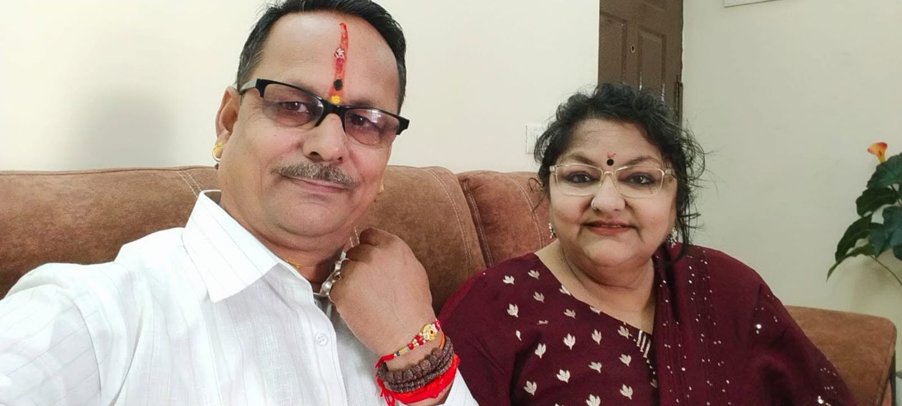
आजचा राखी पौर्णिमेचा दिवस खूपच विशेष ठरला. केवळ दिड दिवसासाठीच पण भाऊ आला आहे. खूप गप्पा झाल्या. जुन्या आठवणींना उजाळा मिळाला. स्मरण दिव्यांची महिरप माझ्या जीवनात सजली. खूप भावूक करणारे क्षण आहेत हे सगळे.
— with Sanjay Kshirsagar.
आज खूप तिव्रतेने जाणिव झाली की सध्या मी ज्या प्रकारचं आयुष्य जगतेय तसं जगण्याची इच्छा कित्येक महिलांची असू शकते.
कोणतेही बंधन नाही, अगदी वेळेचही. स्वतः साठी, मनोरंजनासाठी आणि स्वतःच्या सुप्त इच्छा पुर्ण करण्यासाठी वेळेच वेळ. आरोग्य ही त्यासाठी साथ देण्याजोगे, खूप स्नेह देणार्या मैत्रीणी, अतिशय जीव लावणारे, काळजी घेणारे आणि खूप छान, आपलं घर समजून काम करणारे मदतनीस. एक छान सोसायटी आणि त्यात एक छोटासा पण नेटका फ्लॅट, आणि एक जीवापाड जपणारा मुलगा. आयुष्यात माणसं कमी आहेत म्हणून त्यातून निर्माण होणारी गुंतागुंत नाही. खूप सुटसुटीत, मुक्त, आनंदी आणि स्थिर आयुष्य जे म्हणतात ना "जीवन की आपाधापी" वैगरे तत्सम नंतर मिळालंय.
पण मनुष्य स्वभाव कुठे सोडू शकतो आपण... मला खूप गप्पा मारायला आवडतात
आणि मग बोलायला कोणी तरी हवं असं वाटतं. त्या वेळेसाठी, त्या मूडनुसार योग्य व्यक्ती डोळ्यासमोर आली की त्यांची दिनचर्या, व्यग्रता आठवते आणि नकळत फोन पासून हात दूर जातो
मग काय मैं और मेरी तनहाई पुन्हा एकदा. पण यार माझं स्वतःवर कितीही प्रेम असलं तरी बौद्धिक भूक मी एकट्यात कशी भागवणार
पण त्या क्षणाशी लपाछपी खेळत त्या इच्छेला लपायला सांगते. पण या इच्छा ना फारच डांबरट असतात त्या ना तीन चार वेळा ऐकलं की मग बंड करतात... क्षणभर हतबल वाटू शकतं, पण छे छे आपली शूरवीरता समोर आणून खंबीर वैगरेचं मेडल स्वतःला देऊन तात्पुरती शांतता मिळवायची.
बरं आता आपल्या वेळेला, आपल्या सोयीनुसार आपल्याशी गप्पा मारू शकण्या इतपत रिकामी व्यक्ती या जगात असू शकते का याची खूप उत्सुकता आहे मला कारण ती व्यक्ती बौद्धिक भूक भागवणारी हवी म्हणजे बुद्धीवादी आणि अनुभवी सुद्धा हवी. यार इतकी श्रीमंती कोणाला मिळत असेल का?
त्यात माझ्या सारख्या सोशल मीडिया पासून दूर झालेल्या, कामापुरतं तिथे वावरणाऱ्या आणि मेसेज मेसेज खेळणं न आवडणाऱ्या व्यक्तीचं या काळात कसं होत असावं??? खूप आउटडेटेड जमातीत येते का मी आणि जमातीबाहेरच्या जगातल्या अपेक्षा पुर्तीचा मोह बाळगतेय ना मी
.... अदिती पालिमकर....
आज आईंची म्हणजेच सासूबाईंची खूप आठवण येतेय. मैत्रीणीशी बोलत होते तेव्हा तिच्या जिव्हाळ्याची पेशंट व्यक्ती, सतत खूप चिडचिड करत असते म्हणून खूप त्रस्त होती आणि तिच्याशी बोलताना खूपदा आजारपणापेक्षा, त्यामुळे वाढलेली चिडचिड हाच विषय असतो.
तिच्याशी प्रत्येक वेळी बोलताना मला नकळतपणे होणारे संस्कार जाणवतात आणि आईंचं विशेष कौतुक आणि अभिमान वाढत जातो. आईंचा सहवास तसा कमीच मिळाला, उणापुरा दहा वर्षे. आज फक्त त्यांच्या एकाच गुणाबद्दल सांगायचं आहे. ते म्हणजे त्या अतिशय आदर्श पेशंट होत्या. अतिशय शांतपणे आणि संयमाने त्यांनी त्यांचं आजारपण हाताळलं. सतत त्या स्वतःला जपायच्या की त्यांना त्रास झाला तर आम्हाला करावं लागेल याच विचाराने त्या खूप काळजी घ्यायच्या. आपल्यामुळे कोणालाही त्रास नको ही त्यांची तिव्रतर भावना सदोदित जाणवायची. रात्र रात्र त्रास सहन केला तरीही चुकूनही कधी त्याचं भांडवल केलं नाही. कधीही sympathy मिळवण्यासाठी, attention मिळवण्यासाठी त्यांनी काही केलं नाही, चुकूनही आजारपणामुळे होणारी चिडचिड केली नाही, खाण्यासाठी कधीच कुरकुर केली नाही. फिरायला जाऊ शकत नाही याचा कधीच बाऊ केला नाही. त्या खरोखरच एक आदर्श आणि संयमी पेशंट होत्या. आणि नकळतपणे ते संस्कार माझ्यावर घडले असं मी आज नक्कीच म्हणू शकते. सततचं एवढं आजारपण झालं ते त्यांच्या संस्कारांमुळेच मला आणि दिलेला सुसह्य झालं. घरात कोणी पेशंट आहे याचा कधीच भासही होत नव्हता याचं मुख्य श्रेय त्यांनाच आहे. एकदा लिफ्ट मध्ये माझ्याच मजल्यावर रहाणारी एक जण मला पहिल्यांदाच भेटली. आणि मला बोलता बोलता सांगत होती की या या फ्लॅट मध्ये एक बिमार दिदी रहती है, मी तिला म्हटलं, वो मैं ही हूं. ती खूप संकोचली. मुख्य मुद्दा असा आहे की मला भेटलेल्या कोणालाही मी आजारी असते याचा मागमूस नव्हता, हे केवळ आणि केवळ आईंनी घेतलेल्या स्वतःच्या काळजीतून, इतरांना आपल्या मुळे त्रास नको या त्यांच्या भावनेतून आणि थोडं बरं वाटलं की घरातलं वातावरण एकदम सामान्य ठेवण्याच्या कलेची साक्षीदार झाल्याने मला शक्य झालं...
आई जिथेही आणि ज्या ही रूपात वावरत असतील नक्कीच आनंदी आणि आरोग्यसंपन्न जीवन उपभोगत असतील ही खात्री आहे....
आई खूप खूप सांभाळून घेतलंत मला... ही कच्ची मातीण नव्हती तर विखूरलेले मातीचे कण होते, जे तुम्ही गोळा करून आधी मातीचा गोळा तयार केला आणि नंतर मग आकार दिलात....
....तुमची कायमची ऋणाईत असलेली... अदिती....
३ · तुझ्यासाठी लिहिलेलं
Written for you
१३ posts she wrote to you or about you, mostly on your birthday, 2 August.
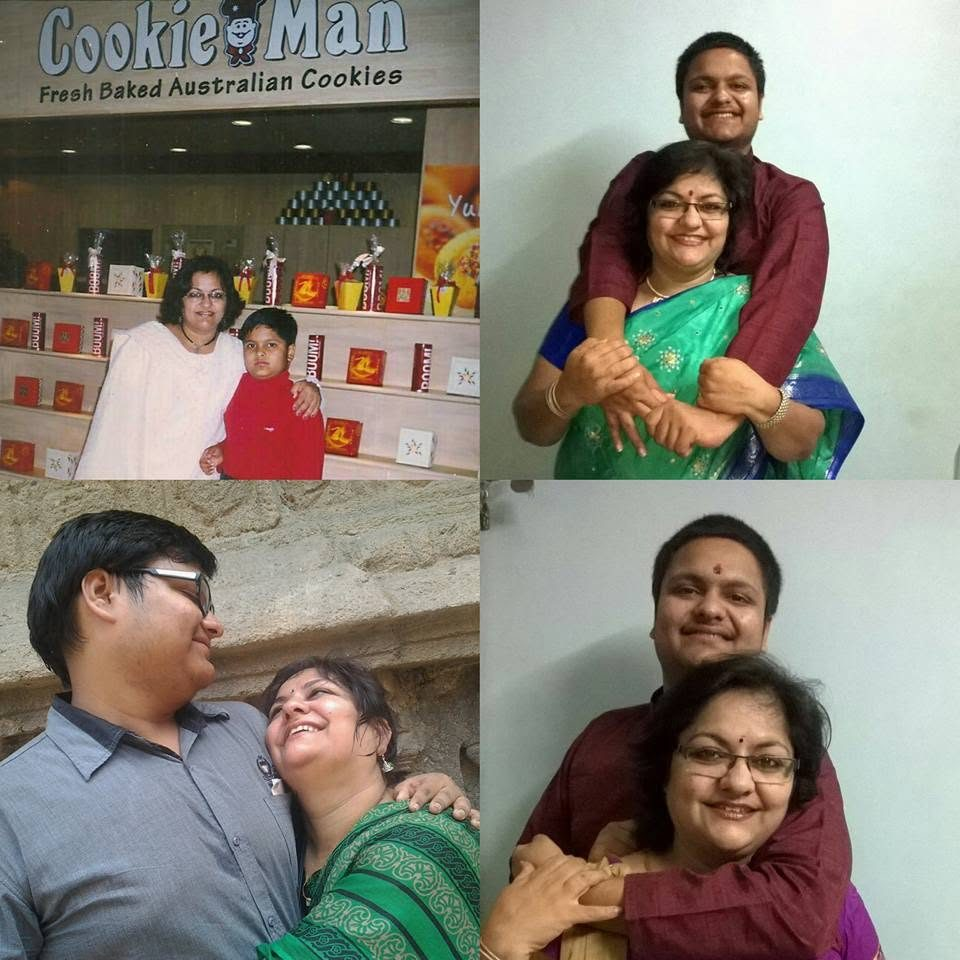
मातृत्व एक सुंदर, अलवार भावना ज्यात जीवनाच सार सामावल आहे .... ह्या भिंतीवर सध्या मातृत्व अभिमानाची अनुभूतीची साखळी विणणे सुरू आहे ...
हे एकमेकींना गुंफनारे धागे खूपच नाजुक पण पक्के आहेत ......
आज माझ्या हातात ह्या धाग्याचे टोक दिलेय Geeta Kulkarni Saraf ने .....धन्यवाद गीता ....
काय बोलू ह्या अनुभूती बद्दल .....विरजला मोठं होतांना ..वाढतांना बघणं ह्या इतकी अप्रतिम घटना माझ्या आयुष्यात कोणतीच नव्हती ...कारण तो केवळ त्याचाच विकास नव्हता तर माझाही होता ....त्याच्यामुळे माझे अंगभूत नसलेले गुणही माझ्यात आले ...त्यांच्यातील लहानपणापासूनचा संयम मलाही संयमित करून गेला ....त्याचं शांतपणे ऐकून घेण्याची वृत्ती मलाही उत्तम श्रोता बनवून गेली ....त्यांच्यातील अवखळपणा माझ्यातील बाल्यभाव जिवंत ठेवतोय आणि त्याची प्रगल्भता मला आणिक प्रगल्भ बनवतेय .....त्याच्या एकूण भोवतालच्या वातावरणाच्या आणि उपलब्ध मार्गदर्शन आणि सोयींच्या मानाने त्याने आत्तापर्यंत मिळवलेले यश हे मोठे आहे पण तरीही स्वतःचे मूल्यांकन करतांना तो करत असलेला व्यावहारिक विचार आणि त्यातील परखडता मनात अभिमान जागृत करते ....
Thanks viraj तू मला पूर्णत्व दिलस ....proud to be your mom ...
साखळी म्हंटल्यावर ती गुंफण आणि ते टोक दुसऱ्या कडीत बसवण क्रमप्राप्त आहे त्यासाठी मी निवडतेय ....
Revati Pimpalgaonkar
Simantini Kundikar
Anupama Madhekar
Sneha Sabnis
— feeling proud with Viraj Palimkar.
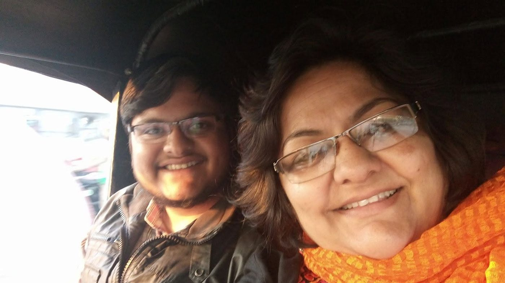
खरंच मजा येतेय...खूप दिवसांनी संघर्ष करावा लागतोय जो जीवन समृद्ध होण्यासाठी नितांत आवश्यक असतो...खूपच स्थैर्य आलं होतं आयुष्यात किंबहुना शिथिलता....आणि एक आत्मविश्वास जो सगळं खूपच सहज होतं असतं आपण उगाचच ताण तणाव घेत असतो हा अति प्रकारातला होता हेही जाणवलं....काय होतं की पहिला पेपर सोपा गेला की आपल्याला पुढचा सुद्धा सोप्पा वाटतो आणि आपण गाफील रहातो असंच होतं ते....
आयुष्यात महत्वाकांक्षी नसणं आयुष्य खूपच सुकर करतं अर्थात ते आयुष्य अर्थपूर्ण असतं की निरर्थक तो वादाचा आणि व्यक्तीगणिक वेगळा मुद्दा.....
आता इथे नेमकं काय घडतय.....जे मला संघर्षमय वाटतंय ते म्हणजे काही क्षेत्रात महिलांना असलेलं कमी अवधान जसं की packers N movers ठरवणे...पटकन विश्वास ठेवणे...व्यावहारिक बाबींच्या पूर्ततेचे महत्व पुरते पणाने न कळणे अथवा विश्वासापोटी दुर्लक्ष किंवा चालढकल करणे.....हुश्श पण कसका आणि कितीका असेना सामान पोहोचले बरं का
अजून एक महत्वाचा मुद्दा भाषेचे महत्व नेमकेपणाने इथे म्हणजे हैद्राबादला आल्यावर कळले...माझं english च कामापुरत ज्ञान आणि इथे असलेला हिंदीवरचा रुसवा...माझ्या अपेक्षा पेक्षा अतिशय वेगळं चित्र कारण हैद्राबाद म्हणजे हिंदी अतिशय स्वाभाविकपणेच मुरलेली असेल असे अपेक्षित होते....माझ्या owner अर्थात घराच्या
बाईंना अजिबात हिंदीच ह येतं नाही असंच दूधवाला पासून प्रत्येक जणं....पण मग मज्जा येतेय.....
लेकरु मोठं झालय किंवा जबाबदार झालय आणि ते घरात सुद्धा कामं छान करतो जितकं यश तो त्याच्या व्यावसायिक जीवनात मिळवतोय तितकंच तो कौटुंबिक जीवनात सुद्धा मिळवेल ह्याची खात्री आईला वाटण्याजोगी दूसरी निवांत करणारी बाब नाही...पण निवांत वेळी हा डोटा मेला सावत्रपणे आई आणि मूलामध्ये कडमडतो बऱ्याचदा....
अजूनही बऱ्याच गोष्टी आहेत ज्यांचा निर्णय घेतांना चांगलाच कस लागणार आहे पण चलता है.... इसीका नाम ज़िंदगी है । सगळ्यात जास्त मजा जुळवून घेतांना येतेय....अगदी पुन्हा तरुण झाल्यासारखं वाटतंय
THANK YOU DEAR VIRAJ....
एक आवर्जून नमूद करेन घर भरल्या सारखं वाटतंय.....आता आयुष्य इतकं जास्त व्यस्त असावं कायम की पुन्हा ते दिवस यावेत जेंव्हा स्वतः साठी दहा मिनिट मिळावेत म्हणून तरसत होते
.........तथास्तू
— feeling कै च्या कै खुष with Viraj Palimkar.
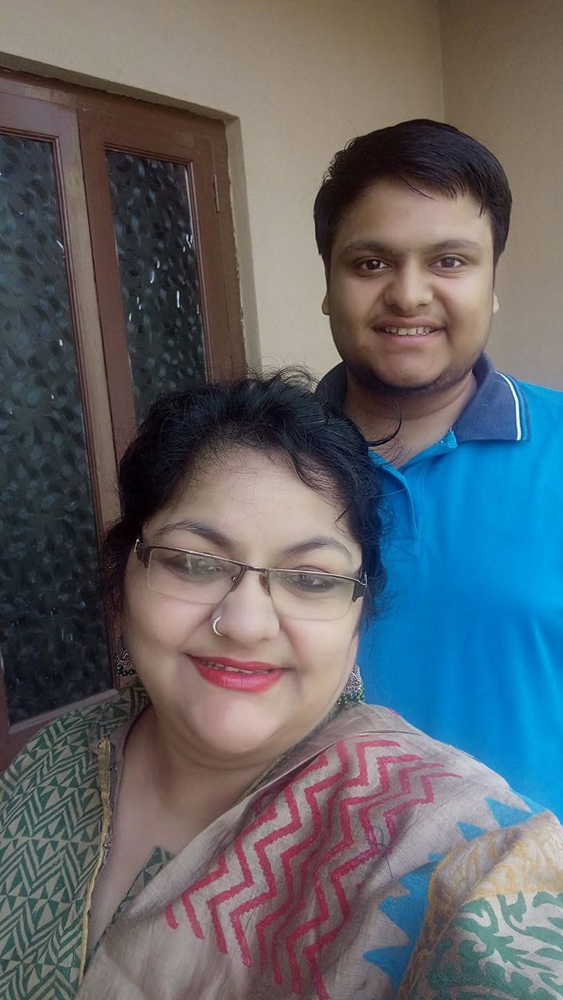
happy birthday viraj .....
तुझ आणि माझ नातं केवळ 23 वर्षातच बदललंय ना मनु ......आणि तू माझा बाबा आणि मी तुझी मुलगी झालेय जणू .....एवढा जपतो कायम तू मला.... तुझ्यात मला माता पिता बंधु सखा सगळीच नाती नेहमीच नकळतपणे अनुभवास येतात .....माझी भावनिक गरज तुला नेमकेपणाने कशी कळते आणि ती भूमिका तू कधी स्वीकारतो मला कधीच कळत नाही आणि मी विचार करत बसते हा दुपट्यातला गोळा एवढा मोठा कधी झाला .....
तू माझ्या मनाचा कणा आहेस .....विचारांचा मूळ आहेस .....तुझ्याविना मी अपंगत्व feel करते ....
पण आई म्हणून जाहीरपणे आज कांही सांगायच आहे .....पिल्लू आळस कमी कर ....अल्पसंतुष्ट असणं छान पण ह्या वयात नको ....ह्या बाबतीत माझ्यावर नसलास तर अधिक आनंद आहे ....आणि महत्वाच पिल्ल्या आपल्या सगळ्या क्षमता मानसिक भावनिक बौद्धिक शारीरिक एकदा तरी पणाला लावून कमीतकमी स्वतःची सक्षमता एकदा तरी जोखुन ठेव म्हणजे गरज पडल्यावर आत्मविश्वास कायम असेल ......
माझ तुझ्यावर खूप खूप प्रेम आहे .....आणि नशीब आपल्यावर आणि आपल्या नात्यावर अशी कृपादृष्टी ठेवून आहे की आपला सहवास आहे आणि तू मला म्हातारी होतांना आणि मी तुला वाढतांना पहातेय ....बेटा असाच मोठा हो ....तू पोटात होता तेंव्हा जे मनात कायम होतं तेच आजही वाटतंय ...माझ्या मातृभूमिला एक चांगला नागरिक माझ्या कडून तयार व्हावा ......
खूप खूप आशिर्वाद .....
स्वामी समर्थ आणि मारुतीराया तुझ्यावर कृपा दॄष्टी कायम ठेवो
— feeling loved with Viraj Palimkar.
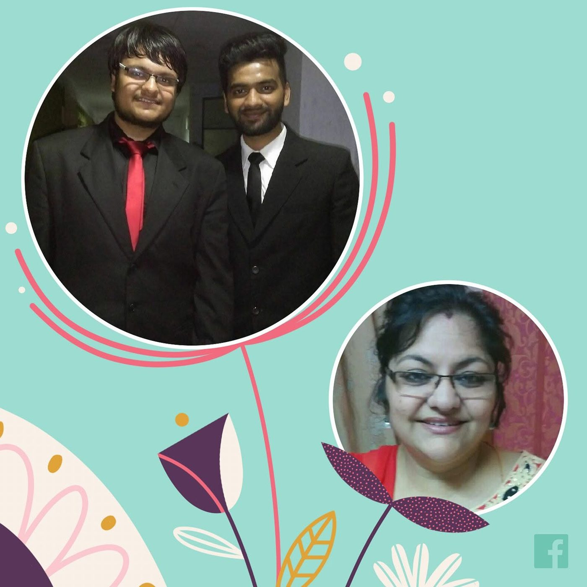
तुझ्यामुळे मिळालेल्या मातृत्व सुखासाठी तुला कोटी कोटी धन्यवाद ! ! ! !
— with Viraj Palimkar.
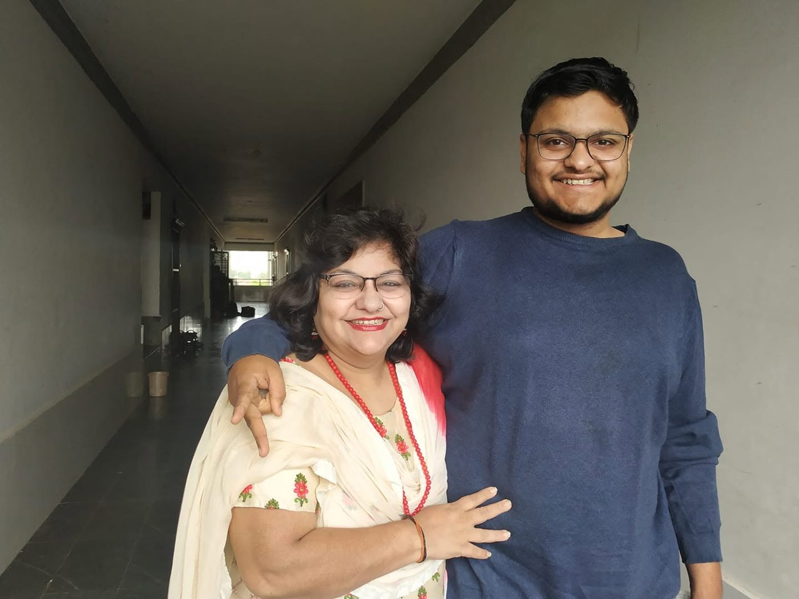
HAPPY BIRTHDAY DEAR
जिवनातील अंतिम सत्य बदल आहे ....आणि तो तुझ्या रूपाने मी पहातेय, अनुभवतेय ....माझं बोट पकडून चालणारा मुलगा आज मला धरायला बोट देतोय ....कांहींही नवीन बदल दिसला तर बावरून, गोंधळून माझ्याकडे बघणारा मुलगा आज माझ्या जीवनात होणाऱ्या बदलांना मी सामोरे जात असतांना माझ्याकडे आश्वस्त नजर टाकून मी आहे तुझ्यासोबत ही मूक खात्री देतोय ....
स्वातंत्र्य देणं आणि आदर करणं म्हणजे काय हे कोणीही तुझ्याकडे पाहून शिकावं ....आईकडेही एक मानवी व्यक्तिमत्व म्हणून पहाता येणं आणि तिच्याकांही स्वतःच्या मूलभूत गरजा असतील हे इतकं साधं सहज पण न पचणार आणि न रूचणार सत्य तू वयाच्या 25 लाच अत्यंत सहजपणे स्वीकारलंस नव्हे नव्हे मलाच समजून सांगितलंस ....
मी आई नंतर आणि माणूस आधी आहे हे मी विसरलेले सत्य तू माझ्या जाणिवात उतरवू पहातो आणि माझं सुख मला स्वतःमध्येच शोधायला प्रवृत्त करतोस आणि माझ्या सुखाचं निमित्त तू होऊ शकतोस पण केवळ तूच माझं सुख आहेस हे मी समजू नये यासाठी प्रयत्न करतोस ...अरे लेकरा हे भल्या भल्याना जीवन अखेर पर्यंत समजत नाही रे ....
माझ्याकडे केवळ एक नजर टाकली तर तुला माझी मनःस्थिती कळते ....
अरे वेड्या काय असं माझं जन्मोजन्मीच पुण्य होतं की माझ्यापोटी तू जन्म घेऊन माझी कूस धन्य केलीस ....
असाच निखळ रहा ....फक्त स्वतःकडेही थोडं लक्ष दे ...आणि कायम माझ्याच उदरात वाढ ....
तुझ्यावर स्वामींची असीम कृपा आहे ...ती कायम अशीच राहो ....तुला उदंड आरोग्यसंपन्न आयुष्य मिळो हीच त्यांच्या चरणी प्रार्थना
— with Viraj Palimkar.

#माझा_मुलगा_माझा_अभिमान
विरज त्याचं नाव...त्याला घडवतानाच तो नकळतपणे मला घडवत गेला...२ ऑगस्ट १९९४ ला त्याने मला मातृपदावर आरुढ केलं...तो एकटाच...पण तरीही कायमच शांत...त्याने अगदी सुरुवातीपासून कधीच त्रास दिला नाही (आता कधी कधी देतो हा भाग वेगळा
), कधीच रडलाही नाही...हट्टीही नव्हता... तो कायमच समंजस आहे
तो खूप खूप हुशार...पण कायम मागच्या बाकावर बसणारा...त्याचे मित्र उंच होते त्यांना मागे बसावं लागायचं म्हणून महाराज कायम मागेच... त्याचं शालेय शिक्षण परभणी सारख्या निमशहरात झालं... चौथी पासून सातत्याने त्याला स्कॉलरशिप मिळाल्या आणि सगळ्या स्पर्धा परीक्षांमध्ये रॅंकर असायचा....त्याच्या जाणिवा कायम सजग होत्या...याचे एक-दोन उदाहरण देते... विशेष कौतुक वाटायचं कारण मी पार्लर मुळे त्याला जास्त वेळ देऊ शकत नव्हते... आणि तो कधीच अभ्यासू नव्हता...परभणीला सोय नसल्याने एनटीएस ची पहिली परीक्षा पास झाल्यावर सीबीएसई आणि बाकी स्पर्धा परीक्षेच्या तयारीसाठी त्याला नगरला एक महिन्यासाठी कोचिंगला ठेवलं सोबत परभणीचे पाच सहा मुलं मुली होते... त्यांच्या वेळी आठवीला एनटीएस ची परीक्षा होती...तशी मुलं लहान होती...हे आठवीला परीक्षा आल्याचं पहिलंच वर्ष असल्याने त्या वर्षी आठवी आणि दहावी दोन्ही वर्षांची मुलं परिक्षेसाठी बसणार होती... फोन आठवड्यात एकदाच आणि तोही एक मिनीटासाठी करता यायचा त्याला पण तेंव्हाही खूप गर्दी असायची सगळ्या मुलांना फोन लावायचे असायचे घरी... खूप मुलं घरी खाण्यावरुन तक्रार करायचे प्रत्येक पदार्थात खूप सोडा वापरतात, चव नाही आणि बरंच काही...विरजने मला कधीही काही सांगितलं नाही... माझ्या कानावर आल्यावर मीच त्याला विचारलं त्याबद्दल त्यावर तो चांगलं असतं जेवण म्हणाला. तरीही मी दोन तीन वेळा तोच प्रश्न विचारला तेंव्हा शेवटी तोच मला म्हणाला आई मी इथे शिकायला आलोय की जेवणाचा विचार करायला तेंव्हा मला एकदम लख्ख प्रकाश पडला...माझा आणि शिक्षणाचा यथातथाच संबंध... फक्त शिक्षणाशिवाय पर्याय नाही...ते घ्यावच लागतं म्हणून शिक्षण झालं इतकंच
आणि अतुल माझा नवरा वकील होता पण तो आणि अभ्यास छत्तीसचा आकडा
त्यामुळे घरात शिक्षणाला प्रेरक वातावरण नव्हतं...मी कधी त्याला रागावून अभ्यासाला बसवलं की बाहेरुन जो कोणी घरात येईल मग सासरे असो की नवरा त्याला अभ्यास करतांना पाहिलं की घरात काय बसला बाहेर खेळायला जा म्हणून पळवायचे
त्यामुळे विरजच्या त्या वाक्याने मी स्तंभीत झाले होते
दहावीला असताना विरजने कोट्याला शिक्षणासाठी जायचा निर्णय घेतला...त्याला अतुलचा विरोध होता...मी तटस्थ होते... माझ्या मनात एकच भावना होती त्याच्या म्हातारपणी मला संधी नाही मिळाली ही खंत नसावी एवढाच एक विचार होता... अतुलने त्याला खूप अमिष दाखवले...तू जाऊ नकोस, तुला सीबीझेड(मोटरसायकल) घेऊन देतो, दर महिन्याला पॉकेट मनी भरपूर देतो, तुला हिशोब विचारणार नाही, कॉलेज पण अटेंड करु नकोस तुला काही विचारणार नाही...एक ना हजार...पण पोरगा बधला नाही
मग अतुलने काही जाचक अटी घातल्या
दोन तीन सांगते...तुला काहीही प्रॉब्लेम आला तर तुझा तू सोडवायचा...आमचा फक्त पैसे पुरवणे इतका संबंध... काहीही झालं तरी आई सोबत कायम रहायला येणार नाही... खूप जणांना हे सगळं खूप जाचक वाटेल... मलाही हा धक्का होता कारण अतुलच्या स्वभावाला हे विसंगत होतं...त्याला आम्ही सोडून आलो...एनटीएस मुळे त्याला चांगल्या इन्स्टीट्यूट कडून पहिल्या सगळ्यात चांगल्या बॅचसाठी स्वतःहून बोलवणं आलं अर्थात आम्हाला फी पुर्ण भरावी लागणार होती पण प्रवेश परीक्षा द्यावी लागली नाही...तिकडे प्रत्येक महिन्यात परिक्षा आणि त्यातील निकालानुसार बॅच बदलते आणि त्यानुसार शिक्षक आणि शिकवण्याची पद्धत आणि दर्जा बदलतो... दुसऱ्या परिक्षेत विरज ए १ बॅचमधून ए२ बॅचमध्ये गेला पण मग मात्र १२ वी संपेपर्यंत त्याने ती बॅच टिकवली तिथे अशा खूप बॅच असतात..अकरावीला एक महिन्यासाठी सुट्टी मिळाली म्हणून त्याला घेऊन आलो आणि कुलदेवतेच्या दर्शनाला निरा नरसिंगपूरला गेलो...तिथल्या पाण्याने त्याला कावीळ झाली आणि डॉ ने दोन महिने मला सोबत जायला सांगितलं...तिथे गेल्यावर एक एक गोष्ट जसजशी कळत गेली माझं हृदय विदीर्ण होत गेलं
वर रहाणारा परभणीचा मुलगा नेहमी माझ्याशी बोलायला यायचा त्याने सांगितलं विरजला तिथे रहाणारे बिहारी मुलं खूप रॅगिंग करायचे...त्याने रोज माझ्याशी इतकं बोलणं होत होत मोबाईल वरुन पण कधीच सांगितलं नाही कारण बाबाला शब्द दिला होता...त्याने स्वभावानुसार अभ्यासही केला नव्हता... अकरावीच्या डीपीपी आणि शिटस् कोर्या होत्या
त्याला मराठी माध्यमातलं शिक्षण असल्याने बरीच अडचण यायची... आणि बाकी भरपूर विषय होते जे इथे अवांतर ठरतील...पण त्यातून त्याने किती मानसिक ताण सहन केलाय याची मला कल्पना आली आणि मी बारावीला त्याच्या सोबत रहायचा निर्णय घेतला आणि अंमलात आणला...बारावीसाठी त्याची ॲडमिशन परभणीला होती...कारण त्याचं स्टेट सिलॅबस आम्हाला कंटिन्यू करायचा होता...आता प्रश्न निर्माण झाला तो सगळ्या परिक्षांचा बाज वेगवेगळा त्यात बोर्डाचं काही शिकायला मिळालं नाही...काही धडे तर पुर्णतः भिन्न...पण ते ही त्याने खूप छान सांभाळलं...त्याला दहावी बोर्डात ९८% होते (आम्ही स्पोर्ट्स मार्क घेतले नव्हते, असा त्याच्या वर्गातील तो एकमेव विद्यार्थी होता. शिक्षकांनीही पुन्हा विचार करा असा सल्ला दिला होता) बारावीत बोर्डात त्याने ९०% मिळवले. जेईई मध्ये त्याने साडे नऊ हजारच्या आत रॅंक मिळवला म्हणून त्याला रिपीट करतोस का विचारलं तर तो नाही म्हणाला... आम्हाला वाटलं अतुलची अट होती काहीही झालं तरी रिपीट करायला मिळणार नाही म्हणून तो नाही म्हणाला म्हणून अतुल स्वतः त्याला म्हणाला तुला हवं तर तू कर तुझं नक्की होऊ शकेल...त्यावर त्याचं उत्तर होतं.... माझ्या पेक्षा कमी अभ्यास केलेल्या मुलांना खूप छान रॅंक मिळाले आहेत...मी माझ्या योग्यतेनुसार ॲडमिशन घेणार...त्याला महाराष्ट्र सीईटी मध्ये २७९ मार्क मिळाले... आणि बीट्स पिलाणी पण मिळत होतं...त्याने तीच एक खाजगी परिक्षा दिली होती... आणि खाजगी प्रवेश परिक्षेवर फीचे पैसे अजिबात वाया घालवायचे नाही अशी मला ताकीद दिली होती...पण त्याचा एआयईईई परिक्षेत महाराष्ट्रातून पहिल्या पाचशेच्या आत नंबर आल्याने त्याला नागपूरच्या विश्वेश्वरैय्या नॅशनल इन्स्टिट्यूट ऑफ टेक्नॉलॉजी (VNIT... Nagpur) ला मेकॅनिकलला प्रवेश मिळाला...इथेही पालक म्हणून माझ्या कडून मोठी चूक घडली होती, मी जेईई सोडून एकाही परिक्षेचे पुस्तकं घेतले नव्हते...लक्षातच आलं नाही...विरजचा अभ्यास आणि कोट्यातलं वातावरण पाहून विरजचं आयआयटी निवड होणार नाही ही जाण होती पण तरीही लक्षात आलं नाही... आणि नंतर परभणीला एआयईईईची पुस्तकं मिळाली नाहीत आणि ती ही परिक्षा त्याने तशीच दिली होती...हे त्याचं यश खरोखरच अभिमानास्पद होतं आणि आहे...तो मुळात हुशार असल्याने आयुष्यात प्रत्येक वेळी एवढं यश मिळवू शकला...
तो इंजिनिअरींगच्या तिसऱ्या वर्षाला असताना त्याने कॅटच्या तयारीसाठी टाईम्स चे क्लासेस लावले होते... आणि शेवटच्यावर्षाच्या सुरुवातीला त्याची इंटर्नल परिक्षा जवळ आली होती, ज्याचे गुण मुख्य परिक्षेत जोडतात. त्याचवेळी डॉ नी अतुलला ट्रेडमिल टेस्ट एकदा लवकर करुन घ्या म्हणून सांगितलं. ते विरजला काळजी नको म्हणून सांगितले नाही... आणि आम्ही त्या टेस्ट साठी औरंगाबादला गेलो... तिथल्या डॉक्टरांनी पुढच्या सगळ्या टेस्ट एकानंतर एक करायला सांगितल्या... अत्यंत प्रतिथयश हॉस्पिटल होतं तिथलं... त्यांच्या सांगण्यानुसार टू डी इको, ॲंजिओग्राफी झाली आणि त्यांनी ॲंजिओप्लास्टी सांगितली... सगळं एका दिवसात आणि खूप भरभर घडत होतं की ज्या शक्यतेचा इतक्या तिव्रतेने विचार केला नव्हता... निर्णय घेताना चुलत सासू बाई, चुलत दीर सोबत होते म्हणून आधार होता...पण ॲंजिओप्लास्टी चालू असताना मला आवाज दिला आणि माझे हातपाय थंड पडले...तो क्रिटीकल झाला होता...त्याला हार्ट ॲरेस्ट आला एक स्टेंट टाकल्यावर असं डॉक्टर चं म्हणणं पडलं...विरजला फोन केला तातडीने निघ...त्याला सगळंच खूप खूप शॉकींग होतं आणि एकाच दिवसांनंतर अतुल गेला...पंधरा दिवसांनी विरज कॉलेजला गेला...कॅंपस साठी नाव द्यायचं नाही ठरलं होतं म्हणून त्याने दिलं नव्हतं...ते गेलं की लगेच दिलं...कॅंपस मधून नौकरी मिळाली... दोन महिने सुट्टी नंतर जॉईनिंग होतं आम्ही सोबत परभणीला होतो आणि तो म्हणाला आई तू पहिल्या दिवसापासून मला सोबत हवी आहेस... त्याचं एक वर्षाचं ट्रेनिंग होतं पण तरीही त्याने मला एकटीला परभणीला राहू दिले नाही...पण त्याचे उच्च शिक्षणाचे स्वप्नं अजूनही पुर्ण होऊ शकले नाही...ह्या वर्षी देतो म्हणाला होता...पण....त्याने चार सप्टेंबर वीसला नवीन कंपनी जॉईन केली आणि एक ऑक्टोबरला मला ओवरीजचा तिसऱ्या स्टेजचा कॅंसर आढळून आला... आणि माझी ट्रिटमेंट सुरू झाली...एकटा असून खूप खूप धीराने सामोरे गेला तो सगळ्या प्रसंगाला... हॉस्पिटल निवडण्यापासून सगळ्या गोष्टी खूप संयमाने आणि विचारपुर्वक केल्या आणि करतोय... प्रत्येक केमोथेरपीला सोबत पुर्ण दिवस जातो त्याचा... खूप खूप काळजी घेतोय... आणि माझ्या ऑपरेशन नंतर कॉम्प्लिकेशन्स येवून मी सिरीयस झाले तेंव्हा थोडा घाबरला होता (अर्थात हे मला डॉ कडून टाके काढायला गेले तेंव्हा आणि सोबत असलेल्या भाच्याकडून कळालं) पण त्याने तो ही प्रसंग खूप खूप संयमाने हाताळला...त्याची पोस्टींग बंगलोरला झालीय पण सध्या जॉयनिंगपासूनच वर्क फ्रॉम होम असल्याने तो हैदराबादलाच असल्याने खूप खूप सुकर झालं सगळं....
म्हणूनच म्हणाले सुरुवातीला त्याच्यामुळे मी घडत गेले...शिकत गेले असं म्हणालेय...त्याचं मनापासून कौतुक वाटतं...एकच खंत कायम आहे तो त्याची क्षमता पुर्णपणे वापरत नाही...तो माझ्यासारखाच अल्पसंतुष्ट आहे आणि म्हणूनच महत्वाकांक्षी नाही तितका...पण खूप विनम्र आणि अतिशय गुणी, अभिमान वाटावा असा मुलगा आहे हे मात्र नक्की... त्याचा सगळ्यात मोठा गुण म्हणजे स्त्रियांचा प्रचंड आदर करतो... स्री स्वातंत्र्याचा तो मनापासून सन्मान करतो
Tag केलेल्या मित्र-मैत्रिणींनी पण त्यांच्या मुलांबद्दल लिहावं अशी नम्र विनंती आहे
.... अदिती पालिमकर....
शेवटी आज हो नाही करता करता आमच्या पदरात वाढदिवसाची भेट वस्तू पडली
चिरंजीव सारखे विचारत होते काय देऊ काय देऊ...आमचा ठाम नकार अगदी केक साठी पण
पण गौरीचं आणि त्याचं काहीतरी बोलणं झालं आणि महाशयांनी वाढदिवसाच्या दिवशी संध्याकाळी केक मागवला... अर्थात दरवाजा तेच उघडतात म्हणून ते ही कळालं नाही
आणि वाढदिवसाच्या रात्री आमच्या सगळ्या विरोधाला मोडता घालून आमच्या समोरच, पण अस्मादिकांना न कळू देता अत्यंत उपयुक्त वस्तू जी, मी घ्यायलाच हवी म्हणून तो आधीपासून मागे लागला होता पण मी दाद देत नव्हते, ती वस्तू म्हणजे रेकॉर्डिंग साठी लागणारा मायक्रोफोन मागवला...मी जुन्या शाळेची विद्यार्थिनी असल्याने एरवी नवीन बदल सहज स्विकारत असले तरीही हा बदल पचनी पडत नव्हता... मी आलेला मायक्रोफोन परत करायला लावला पण त्याला केवळ रीप्लेसमेंट असल्याने परत सेम तीच वस्तू मिळाली
मग आत्ता तो नवीन म्हणजे दुसरा लाल माईक आल्यावर, सी टाईप कन्व्हर्टर आणून तो वापरुन पाहिला....आहाहाहा किती सहज सोपं झालंय सगळं...एवढा जड फोन इतका वेळ हातात पकडून हात दुखायचा
बरेचदा एक वाचायला आणि एक रेकॉर्डिंग दोन हातात दोन फोन पकडावे लागत तेव्हा खूप मजा यायची हातांची...पण आता आरामात फोन खाली ठेवून रेकॉर्डिंग करता येतंय आणि तरीही आवाज खूप स्पष्ट वाटला... अर्थात माईक वापरायची सवय व्हायला वेळ लागेल... काही एपिसोड कदाचित प्रयोग वाटू शकेल पण सगळं मस्त सहजसोपं होईल नंतर...
पहिले शंभर सबस्क्राईबर झाल्यावर लेकराने आयपॅड घेऊन दिला होता, पण मी तो रेकॉर्डिंग ला कधी वापरलाच नाही मला थोडं कठीण वाटलं ते सगळं...पण माझ्या आजारपणात पुरेपूर पिडलं मी त्या सफरचंदाला
लेकरा आईला काय हवंय यापेक्षा आईची नेमकी गरज ओळखतोस हे खूप खूप महत्त्वाचं आहे... फक्त कधीतरी आपल्या मातोश्री काय करतात हे पहाण्यासाठी तरी, त्यांनी काय लिहीलय किंवा काय वाचलंय हे वाचायला ऐकायला हवंय, हे कळून कृतीत आणशील तो सुदिन असेल माझ्यासाठी
LOVE YOU पिल्लू
.... अदिती पालिमकर....
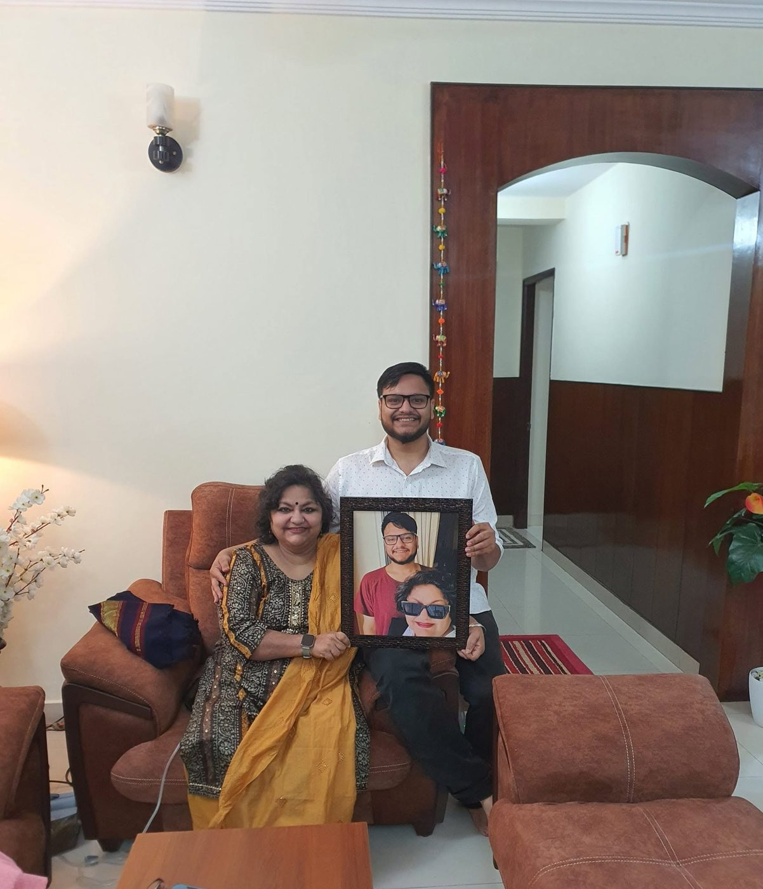
कोणालाही माझ्या बद्दल अतिशय हेवा वाटायला लावणारी एकमेव गोष्ट माझ्याकडे आहे आणि ती म्हणजे तू....विरज
HAPPY BIRTHDAY VIRAJ
LOVE YOU DEAR VIRAJ BETA
— with Viraj Palimkar.
लेकराच्या भक्कम खांद्याचा आधार.... सर्वाधिक सुरक्षित
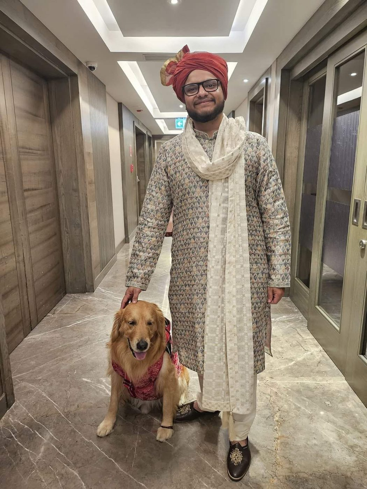
Happy Birthday BETA
[गाण्याच्या ओळी]
[गाण्याच्या ओळी]
जन्मोजन्मी हाच मुलगा मिळू दे असं एखादं व्रत असेल तर मी ते जन्मोजन्मी करत राहीन
आणि पुढच्या जन्मी मला एवढं भाग्य नक्की मिळू दे की मी तुला.... माझंही आयुष्य तुला लाभू दे असा आशिर्वाद देऊ शकेन....
आज खूप हळवी झाली आहे. तुझ्या प्रेमापुढे नतमस्तक झाली आहे.... आज पहिल्यांदाच खरोखरच शब्द थांबले आहेत....
स्वामी तुमचा नातू तुमची जबाबदारी आहे.... कृपावंत व्हा
वाढदिवसाच्या हार्दिक शुभेच्छा
खूप खूप शुभाशीर्वाद
स्वामी महाराज लेकराला सुखी, समाधानी, तृप्ततेचे, मनःशांती असलेले आयुष्य लाभू दे.
..... अदिती पालिमकर.....
— with Viraj Palimkar.
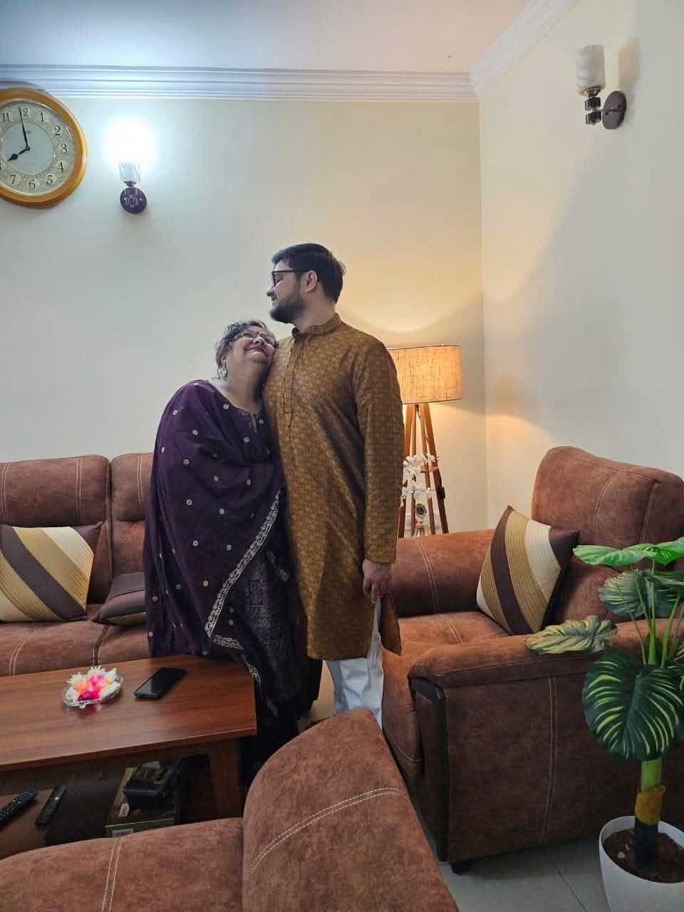
प्रिय विरज,
Happy Birthday beta
तुझा आज वाढदिवस... तू कायम खूप आनंदी, आरोग्यसंपन्न असावास, जीवनाविषयी कृतज्ञ असावास अशी मनापासून इच्छा, प्रार्थना....
आज तू ३० पुर्ण केले. वयाचा एक मोठा टप्पा पार केलास. पण अनुभवांचा त्या दुप्पट ठेवा मिळवलाय. इतरांच्या आयुष्यात येणारी middle life crisis तू आधीच पार पाडलेले आहेत, त्यामुळे वरच्या इच्छा पूर्ण होतील अशी अपेक्षा आहे.
पण आज मी माझ्या साठी व्यक्त होतेय. कारण मला तीस वर्षांपूर्वी याच दिवशी मातृपद प्राप्त झालं. एक छोटंसं गोंडस बाळ माझ्या कुशीत आलं होतं. तो नऊ महिन्यांचा काळ मला खूप अचंबित करणारा होता. खूप शिकवणारा, जबाबदार बनवणारा होता. सगळं खूप उत्तम पार पाडत होते पण खर्या मातृपणाची समज येण्यासाठी तू प्रत्यक्ष कुशीत येण्याचा कालावधी लागला. तो दिवस आणि आजचा दिवस जेंव्हा तू समर्थ पुरूष म्हणून समाजात घरात वावरतो आहेस, किती वळणावळणांतून जात जात नाळ नुसती जोडलेली राहीली नाही तर एकजीव झालीय. आणि ती एकजीव होण्यासाठीच ती जन्मताच तोडावी लागते हे ही तीव्रतेने जाणवलं. आज मी आत्मविश्वासाने म्हणू शकते मी मातृपद निभवू शकले. आणि समाजाला एक सुयोग्य नागरिक देऊ शकले. तूझ्या मुळे मी खूप खूप शिकले आणि त्यापेक्षा खूप खूप घडले म्हणणं अधिक योग्य. तू हळूहळू मोठा होत होता आणि माझ्यातल्या जाणिवा, सजगपणा त्याप्रमाणे हळूहळू वाढत होता. तू कसा घडावास याचा कच्चा आराखडा मनात तयार होता, त्याप्रमाणे मला तो प्रत्यक्षात उतरवताना स्वतःला बदलावं, घडवावं लागत होतं. एखादी मुर्ती घडवताना मुर्तीला घाव सहन करावे लागतात पण माझ्या बाबतीत तुला घडवण्यासाठी मला स्वतःच्या अनेक सवयी, वृत्तीवर, इच्छा, अपेक्षांवर तो हातोडा मारावा लागला कारण माझं लहानपण खूप खूप वेगळ्या परिस्थितीतून गेल्याने चौकटीतलं पालकत्व parenting नेमकेपणाने अंशानेही माहिती नव्हतं. तू पहिल्यांदा केलेल्या प्रत्येक कृतीचं मुल्यमापन करायचे, ती अयोग्य वाटली तर आधी ते स्वतः मध्ये शोधायचे आणि स्वतःला बदलवायचे त्यामुळे अगदी लहानपणापासून विरज असं करू नको वैगरे जास्त कधी करावं लागलं नाही आणि तू आपोआपच खूप लगेचच तसं वागणं किंवा करणं बंद करायचास. अर्थात स्त्री पुरुष यातल्या नैसर्गिक, स्वाभाविक भेदामुळे मी कधी कधी विशेषतः teen age मध्ये तू प्रवेश केल्यावर मी ते समजून घेण्यासाठी बाबांची पण मदत घेतली आहे. पण विरज एकुणच तुझी स्वतःची निवड उत्तम असल्याने तू वेळोवेळी स्वतःला थबकवत, वाकवत, वळवत इथपर्यंत आणलं आहेस आणि एक कृतार्थ मातृपद मला बहाल केलं आहेस.
बेटा.........
आहेस तो अत्युत्तम आहेस. असाच रहा. तुझ्यातला मला आवडणारा सर्वोत्तम गुण म्हणजे तू खूप शांत डोक्याचा आहेस. अगदी हाताच्या बोटावर मोजता येतील इतकही कधी चिडलेलं, बावरलेलं, गोंधळलेलं तुला मी पाहिलं नाही. तुझा परिस्थितीशी झगडताना स्वतःशी खूप संघर्ष झाला असणार हे गृहीत आहे, पण त्याचा तुझ्या वागण्यातून, शारीरिक भाषेतून, शब्दांतून कधी म्हणजे कधीही कळलं नाही. तुझ्या सगळ्या मनोसंघर्षाचे टप्पे किती सहजपणे पार केलेस असं वाटण्या इतपत कायमच तू शांत वृत्तीने वावरलास. यासाठी प्रथम स्वामींविषयी कृतज्ञता आणि प्रणाम आणि नंतर तुझं खूप मनापासून खूप खूप कौतुक. बाळा खूप भरभरून तृप्त, शांत, समाधानी जग आणि तुझ्या समवेत असणार्या जीवाभावाच्या आप्तांनां तीच सह अनुभूती दे.
पुन्हा एकदा वाढदिवसाच्या मनापासून खूप खूप शुभेच्छा
LOVE YOU बाळा.
काळजी घे. मी कायम तुझ्या सोबत आणि पाठीशी आहे हे तुला माहीत आहेच. पण यातलं सत्य म्हणजे तू कायम माझ्या सोबत आणि पाठीशी आहेस आणि हे तुझ्या छोट्या छोट्या कृतीतून मला जाणवतं आणि त्यामुळे मी सुखावते कारण जो माझी इतकी काळजी घेतो, तो त्याच्या साठी आपल्या आई वडिलांपासून, जीवलगांपासून दूर येणाऱ्या आपल्या अर्धांगिनीची, ती तुझ्या आयुष्यात आल्यावर तितकीच मनापासून काळजी घेशील, साथ देशील अशी पुर्ण खात्री झाली आहे. त्यामुळे तू आता सर्वार्थाने पुर्ण संसाराची जबाबदारी घेण्या योग्य झाला आहेस. तुला खूप खूप शुभेच्छा
.....आई..... अदिती पालिमकर.....
— with Viraj Palimkar.
श्री स्वामी समर्थ
महाराजांच्या कृपाशीर्वादाने विरज कायम अत्यंत तृप्त, समाधानी रहावा
महाराज
स्वामी महाराज,
विरजला आरोग्यसंपन्न दिर्घायुषी होवो असा आजच्या सुदिनी कृपाशीर्वाद प्रदान करावा
— with Viraj Palimkar.
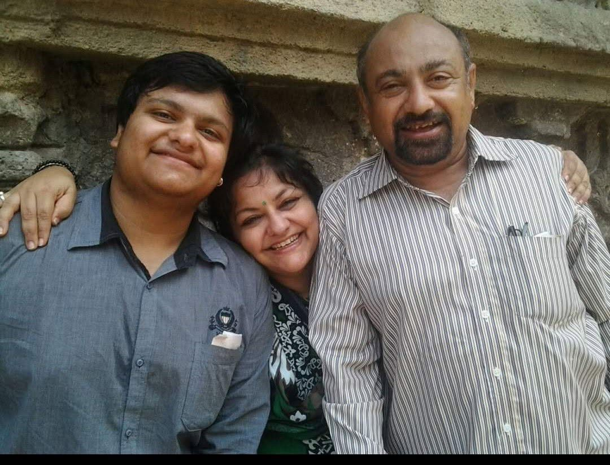
आज का किस्सा....
साल 1994
आज ही के दिन शाम के छ साडे छह बजे मैं कॉरीडोर से सबको बाय करके जा रही थी, तो पिछे से सासूमा की आवाज आयी... मुझे लगा था ये अंदर जाते हुए खूब तमाशा करेगी शोर मचायेगी पर ये कितनी शांती से जा रही है....
मैं सिजेरियन के लिये जा रही थी....
तो आज ही के दिन 1994 में मैं मां बनी थी और मैंने जिंदगी भर का असीम प्यार अपने लिये धरती पर उतारा था....
तो आज मेरे बच्चे का जन्मदिन हैं
Happy Birthday Dear Viraj
४ · तिचा आवाज
Her voice
From 2020 she read Marathi stories and books aloud on YouTube, through chemotherapy and after.
४६८ अभिवाचनं
"मी केवळ माझ्या आनंदासाठी हे अभिवाचन करते... चांगलं साहित्य लोकांपर्यंत पोहोचावं..."
अरुणा ताई म्हणजे अरुणा टोपरे मुळे मला संपदा जोगळेकर कुलकर्णी चं अभिवाचन शिबीर करण्याचा योग आला
अरुणाने काही महिन्यांपूर्वी मला हे शिबिर आहे सांगितलं होतं पण मी तितकं गांभीर्याने घेतलं नाही... तरीही तिने मला ह्यावेळी पुन्हा शिबीराविषयी माहिती पाठवली आणि नुसती माहिती पाठवून थांबली नाही तर मागच्या वेळीसारखा फोन पण केला आणि मी शिबीरात दाखल झाले...
आणि मला अलीबाबाची गुहाच उघडली
अतिशय मुद्देसूद आणि शास्त्रीय माहिती मिळाली... सगळ्यात महत्त्वाचं एक सजगता आली..एक दृष्टिकोन मिळाला...जो मला खूप महत्वाचा वाटतो...
काही गोष्टी घडायला योग्य वेळ यावी लागते हेच खरं...
शिकलेलं थोडं फार जरी मी उपयोगात आणू शकले तरी मला अभिवाचनासाठी खूप खूप फायदा होईल हे नक्की
सध्या १९५० ते २०२० ह्या ७० वर्षांच्या कालावधीतील कथा अभिवाचनाला घेतलेल्या आहेत, त्यामुळे काम खूप वाढलंय. विविध रसातील आणि वेगवेगळ्या लेखकांच्या कथा घ्यायच्या आहेत म्हणून वाचन खूप करावं लागतं...कधी कधी बर्याच कथा वाचल्यावर दोन तीन चांगल्या कथा मिळतात. मग त्या त्या कथेनुसार त्याच्याशी निगडीत इतर गोष्टी, त्या ही प्रत्येक वेळी वेगवेगळ्या.... त्यामुळे ह्या शिबीरासाठी ही सगळी चार दिवसांची तयारी आधीच करून ठेवावी लागली जेणेकरून आपल्या श्राव्यहोत्रात अखंड समिधा घालता याव्यात
आशा करते हे निष्काम कर्म, साहित्यसेवा घडवून आणेल
— with Aparna Kulkarni and
8 others
काल संध्याकाळी माझ्या यु ट्यूब चॅनलने पाचशे सबस्क्राईबरचा टप्पा ओलांडला...हे केवळ तुम्हा सगळ्यांमुळे घडू शकलं...तुम्हा सगळ्यांचे मनापासून खूप खूप आभार
मनःपुर्वक धन्यवाद
त्यानिमित्त.....
#काही_मनातलं
कधी कधी खूप साध्या सहज घटना तुमच्या जीवनाला एक वळण, दिशा देणार्या ठरतात...केवळ एका व्हाट्सअप गृप साठी अभिवाचनाचा व्हिडिओ केला होता तो खूप मोठा झाला म्हणून फेसबुक वर अपलोड केला...दुसरा व्हिडिओ केला तो त्याही पेक्षा मोठा झाला अर्थात तंत्रज्ञान आणि त्याचे नियम माहीत नसल्याने आणि त्यावर विचार न केल्याने पुन्हा पुन्हा ती चूक घडली होती... आणि तसा विचारही मनात आला नाही... फक्त रेकॉर्डिंग वाया जाऊ नये कारण मोबाईल मध्ये जागा नव्हती आणि तो व्हिडिओ डिलीट केल्याशिवाय पर्याय नव्हता म्हणून शेवटचा पर्याय म्हणून यु ट्यूब वर टाकून ठेवावा एवढाच विचार मनात आला आणि शेअरचं बटन दाबलं... त्यासाठी स्वतःचं अकाउंट किंवा चॅनल लागतं असली काहीही माहिती नव्हती पण यु ट्यूब ने जे जे सांगितलं तसं केलं आणि तो व्हिडिओ अपलोड केला...पण गंमत अशी होती की माझं यु ट्यूब चॅनल तयार झालं हे मला कळलंच नाही... दोन दिवसांनी ते लक्षात आलं आणि मग जर नकळतपणे चॅनल सुरू झालंच आहे तर नियमितपणे काही तरी टाकायला हवं एवढीच भावना होती...मग सुरू झाला खेळ...आपण काय काय करु शकतो या विचारांचा... आणि लक्षात आली Aparna...माझी चुलत बहीण... खूप छान लेखिका आहे...तिची तेंव्हा नुकतीच लिहीलेली आणि मला आवडलेली कथा मोगरा फुललाचा एक भाग रेकॉर्ड करून तिला पाठवला आणि परवानगी मागितली... तिनेही खूप मोठ्या मनाने ती मला दिली आणि सूरुवात झाली नियमितपणे रोज व्हिडिओ अपलोड करायला... त्याचबरोबर सुरू झालं माझं शिकणं...
काही लोकांचा उल्लेख खूप आवश्यक आहे ज्यांची खूप मदत झाली किंबहुना त्यांच्या शिवाय हे चॅनल सुरू रहाणं शक्य नव्हतं...त्यात सगळ्यात पहिलं आणि महत्त्वाचं नाव आहे Anand Gholkar ... त्यानेच वाचककट्टावर टास्क दिला होता काव्य वाचन आणि अभिवाचन...मी काव्य वाचन खूपदा केलेलं होतं म्हणून अभिवाचन आणि तोही व्हिडिओ ही त्याची माझ्या कडून अपेक्षा आणि आग्रह होता म्हणून ते मोठे व्हिडिओ तयार झाले....
आता गंमत अशी होती की मी यु ट्यूब साठी कोणत्या फॉरमॅट मध्ये व्हिडिओ टाकावेत आणि इथे उल्लेख करावा लागेल Prakash Pitkar ...त्याने मला जाणिव करुन दिली मी आवाजाची कलाकार आहे आणि आवाज हेच माझं मुख्य माध्यम असायला हवं आणि मला कॅमेरा आणि प्रकाशाचं अजिबात ज्ञान नाही त्यामुळे मी व्हिडिओचा अजिबात विचार करु नये...ते मला खूप खूप पटलं...मला फ्रेमही कळत नाही... आणि मी फक्त ऑडीओ हे माध्यम स्विकारलं ज्यामुळे मार्गक्रमण खूप खूप सुकर झालं...मला आवरण्याचा प्रचंड कंटाळा आहे...
पुन्हा अडचण आली...नुसता ऑडीओ यु ट्यूब वर अपलोड करता येत नाही... पुन्हा आनंद घोलकरला विचारलं आणि त्याने फिल्ममेकर ॲप बद्दल माहिती दिली आणि वापरण्याची प्राथमिक माहिती सांगितली...
आता प्रवेश झाला तो प्रकाश धर्म सरांचा...त्यांनी एक व्हिडिओ पाहून चित्र पटापट बदलतात आणि त्यासाठी काहीतरी करणं गरजेचं आहे असं सांगितलं...मी त्यासाठी बरेच प्रयत्न केले पण मला जमत नव्हतं Venkatesh ना पण विचारलं त्यांनी पण सांगितलं पण ते वापरत असलेलं ॲप वेगळं होतं... त्यामुळे त्यावरून मला काहीच जमत नव्हतं... पून्हा एकदा अचानक आनंद घोलकरचा मेसेज त्याच गोष्टी साठी आला चित्र खूप बदलतात स्थिरता नाही...मग मी अडचण सांगितली आणि एका क्षणात त्याने प्रश्न सोडवला... आनंद अतिशय उत्तम शिक्षक होऊ शकतो...त्याची समजावण्याची हातोटी जबरदस्त आहे...
आता मोगरा फुलला संपत आलं होतं... आणि मदतीला आली Pratima Kingi ...माझी जिवलग सखी...हिने खूप मनापासून, आवडीने सुरुवातीपासून आतापर्यंत माझ्या ह्या उपक्रमाबद्दल उत्सुकता दाखवली आणि वेळोवेळी सल्ले दिले... नॉट विदाऊट माय डॉटर वाचायला घ्यावं ही तिचीच सुचना... राजश्री पारखी आणि Swati Ranade आणि प्रतिमा आमचा चौघींचा गृप आहे आणि त्यावर मी सुरुवातीचे दोन तीन भाग ऐकायला देऊन त्याची मदत घ्यायचे... जेंव्हा वेगवेगळ्या कथा वाचायला घेतल्या तेंव्हा ते बंद झालं...
माझ्या भरकटलेल्या मनाला, मेंदूला एक स्थिरता दिली अभिवाचनाने... अतुल गेल्यापासून पाच वर्ष सैरभैर असलेलं डोकं बर्यापैकी ताळ्यावर आलं आणि आवडीच्या कामात व्यस्त झालं... नवनवीन गोष्टी शिकायला मिळाल्या... खूप चांगली माणसं जोडली गेली... नवनवीन तांत्रिक अडचणी सोडवता आल्या आणि त्यातून अजून शिकणं झालं... अर्थात यात विरजचा मोठा हात आहे...मी जेंव्हा जेंव्हा त्याला अडचण आल्यावर विचारायला गेले तेंव्हा तेंव्हा त्याने अडचणही न ऐकताच मला येत नाही म्हणून अंग झटकलं आणि मी स्वतः शिकत गेले...
मग पुण्याची मैत्रीण Smita Joshi ने कृष्णायन सुचवलं...पुस्तक मागवलं... आणि ते सुरू करायचा विचार केला आणि त्या आधीच मला तिसऱ्या स्टेजचा कॅंसर असल्याचे आढळून आले... माझ्या कडे चार पाच कथा तयार होत्या म्हणून हॉस्पिटलमधूनही नियमितपणे व्हिडिओ अपलोड करत होते...कृष्णायन कादंबरी वाचायला वेळच नव्हता मग केवळ प्रस्तावना वाचून पहिल्या केमोथेरपी नंतर दवाखान्यातच अभिवाचनाच्या पहिल्या भागाची प्रस्तावना लिहिली आणि दुसर्या दिवशी घरी आल्यावर रेकॉर्ड केली... आजारपणामुळे अधूनमधून खंड पडणार याची जाणीव होती म्हणूनच अधूनमधून खंड पडू शकेल त्यासाठी आधीच प्रस्तावनेत श्रोत्यांची माफी मागितली... आणि जे वाटलं ते खरं ठरलं...आधी हिशोबाने काही भाग जास्त तयार करून ठेवले केमोथेरपी आधी तरी थकवा वाढला तर रेकॉर्डिंग करु शकत नव्हते आणि खंड पडायचा... आणि तीन केमोथेरपी नंतर ऑपरेशन ठरलं...मी आठ नऊ भाग तयार करून पेट स्कॅन साठी ॲडमीट झाले... त्यानंतर ऑपरेशन ठरलं... आणि ऑपरेशनच्या नंतर पाचव्या दिवशी ब्लड रिॲक्शन झाली आणि खूप कॉम्प्लीकेशन्स झाले...त्यातच रेकॉर्डेड भाग संपले होते आणि पहिला मोठा खंड पडला... प्रचंड थकवा होता... बरेच दिवस गेल्यावर एकीने अभिवाचन खूप मिस करतेय म्हणून मेसेज केला आणि राहिलेले दहा भाग मी एकाच दिवसात रेकॉर्ड करून टाकले
आणि ते पुर्ण झालं आणि मला अत्यावश्यक असलेली एक महिन्याची सुट्टी घेतली... त्याकाळात सोशल मिडियाच्या सगळ्या प्लॅटफॉर्मवरुन काही काळासाठी जाणीव पूर्वक दुर राहिले... आणि आता परत अभिवाचन सुरू केलंय...आजही तीन भाग रेकॉर्ड केले आहेत कारण केमोथेरपीला जायचं आहे...
मला खूप नकळतपणे माझ्या आवडीचं क्षेत्र मिळालं... आणि तिथेच शिकायला मिळालं... माझ्या अभिवाचनाला तिथेच सुरुवात झाली कारण मी पुर्वी कधीच अभिवाचन केलं नव्हतं... मोगरा फुललाच्या वेळी श्रोत्यांकडून येणार्या सूचनांमधून शिकत गेले, चूका सुधारत गेले...इथे आवर्जून उल्लेख करावा लागेल Ramdas Kamath सरांचा... त्यांनी अभिवाचन मनापासून आवडलं आणि माझ्या कामाचं कौतुक म्हणून त्यांचे दोन कथासंग्रह आणि चित्रा जगदीश शर्मा या अतिशय सुंदर लिखाण असलेल्या आणि त्यांची नातेवाईक असलेल्या लेखिकेचा एक कथासंग्रह आणि एक कौतुकाचे बोल असलेलं पत्र कुरीयर केलं...मला ते सरप्राइज होतं... खूप खूप आनंद झाला...विरजलाही ते सुंदर पत्र पाहून खूप कौतुक वाटलं...मिनाताई खोंड यांनीही त्यांची ई पुस्तके दिली... सगळ्यांकडून होणार्या कौतुकामुळे खूप प्रोत्साहन मिळालं... आणि सल्ले आणि सूचनांमुळे ज्ञान आणि उत्तमोत्तम करण्याची प्रेरणा मिळाली.. ॲडव्होकेट अशोक सोनी आणि adv. Anant Gadre यांनी मोलाचे मार्गदर्शन केले, त्यामुळे खूप धीर आला...
आणि आज असा टप्पा आला की मला हे सगळं लिहावं वाटलं...आज पाचशे सबस्क्राईबरचा टप्पा ओलांडला... आणि विरज म्हणाला आई ही मोठी अचिव्हमेंट आहे... सेलिब्रेट करायला हवं...पहिले शंभर सबस्क्राईबर झाल्यावर त्याने मला आयपॅड घेऊन देऊन वर्तुळ पूर्ण केलं...त्याच्या लहानपणी त्याला यशाचं कौतुक म्हणून घेऊन दिलेल्या भेटवस्तू ते मला त्याने कौतुकापोटी घेऊन दिलेली भेटवस्तू....वयानूसार नात्याच्या भूमिका बदलत जातात याचा पुन्हा प्रत्यय आला...हे लॉकडाऊन आणि आजारपण मला खूप काही देऊन गेलं...माझी रिकामी झालेली ओटी त्यानं भरभरून दान टाकून भरली... माझ्या लेकराचा प्रचंड सहवास...त्याच्या वयाच्या पंधराव्या वर्षापासून तो बाहेर रहात होता...आधी मी पार्लर मध्ये प्रचंड व्यस्त होते म्हणून त्याला वेळ देऊ शकत नव्हते... एकमेकांची वैचारिक बैठक, बदललेले स्वभाव, सवयी या सगळ्या गोष्टी बारकाईने समजल्या... सुरुवातीला एक दोन आठवडे झालेल्या संघर्षानंतर हळूहळू तटस्थता आणि नंतरचं जवळ येणं सगळा प्रवास खूप खूप सुखावह होता... आणि एक चांगला मित्र ज्याच्या जवळ कोणत्याही विषयावर मोकळेपणाने बोलता येणं...आई पेक्षा माणूस म्हणून माझ्या कडे पहाता येणं...हे मला एक चांगला मित्र विरजच्या रुपात देऊन गेलं... जेंव्हा एक वजा होत असतं तेंव्हाच काहीतरी दुसरं तुमच्या झोळीत पडत असतं... फक्त झोळी फाटू न देता अत्यंत विनम्रतेने ते तुम्हाला स्विकारता आलं पाहिजे... आणि ते आपल्या साठी योजलेलं आहे हे जोखता आलं पाहिजे...मग दुनिया गुलजार आहे....
..... अदिती पालिमकर....
— with Viraj Palimkar.
५ · आठवणींचा नकाशा
Memory map
The journey, year by year, in her photos and her lines. Dates are when she posted.
- १९९४
२ ऑगस्ट १९९४ — "आज ही के दिन 1994 में मैं मां बनी थी."
Viraj is born. This childhood photo is one she shared in January 2017 with the words "Love you viraj."
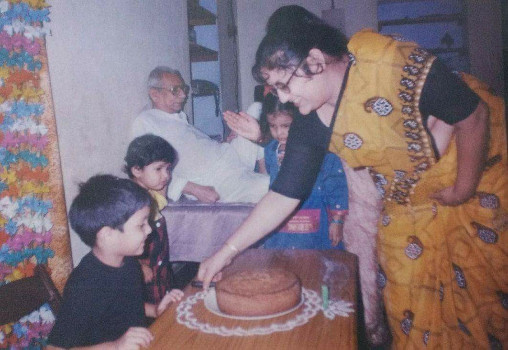
- २०१३
December 2013.
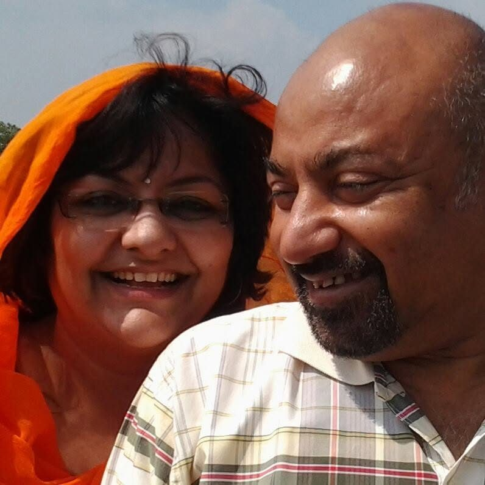
- २०१४
"Viraj...u r soooo special for me."
October 2014.
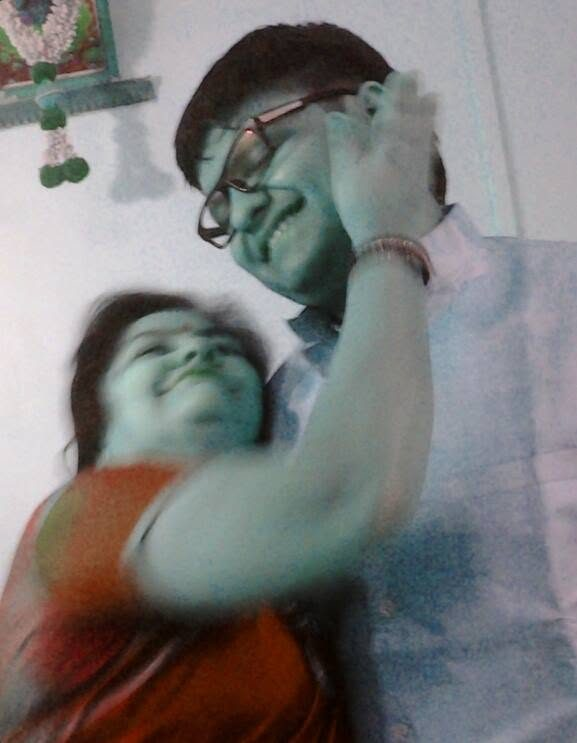
- २०१५
"अतुल गेल्यापासून पाच वर्ष सैरभैर असलेलं डोकं..."
August 2015: Baba passes away suddenly, in Viraj's final year at VNIT.
पाडवा — "आज आईची भूमिका मात्र मी हक्काने आणि वात्सल्याने नक्कीच निभावेन."
Padwa, November 2015, three months after Atul's death.
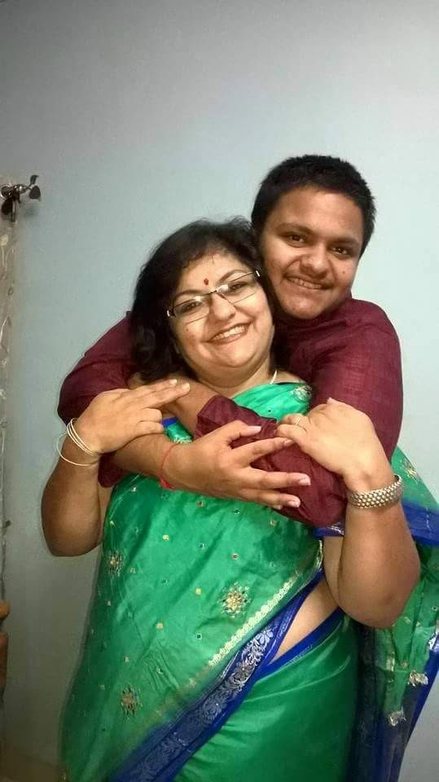
- २०१६
"Thanks viraj तू मला पूर्णत्व दिलस ....proud to be your mom."
April 2016.
"आई तू पहिल्या दिवसापासून मला सोबत हवी आहेस."
July–August 2016: Viraj's first job begins in Pune on 1 August. She closes up the house in Parbhani and comes to Pune to live with him.
दिवाळी.
Diwali, October 2016.
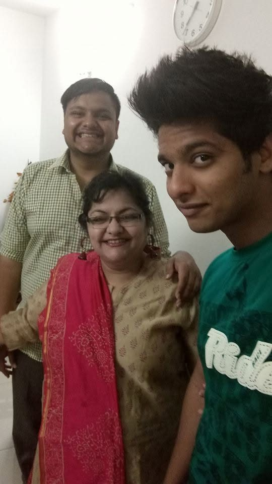
- २०१७
हैद्राबाद — "घर भरल्या सारखं वाटतंय."
Early 2017: from Pune to Hyderabad with Viraj.
"तू माझा बाबा आणि मी तुझी मुलगी झालेय जणू."
Viraj's birthday, 2017.
- २०१९
"आई ......" — Mother's Day, written to her own mother.
May 2019.
"माझं बोट पकडून चालणारा मुलगा आज मला धरायला बोट देतोय."
Viraj's birthday, 2019.
- २०२०
"मी आणि विरजचा व्हिस्की."
July 2020. The YouTube readings begin this year.
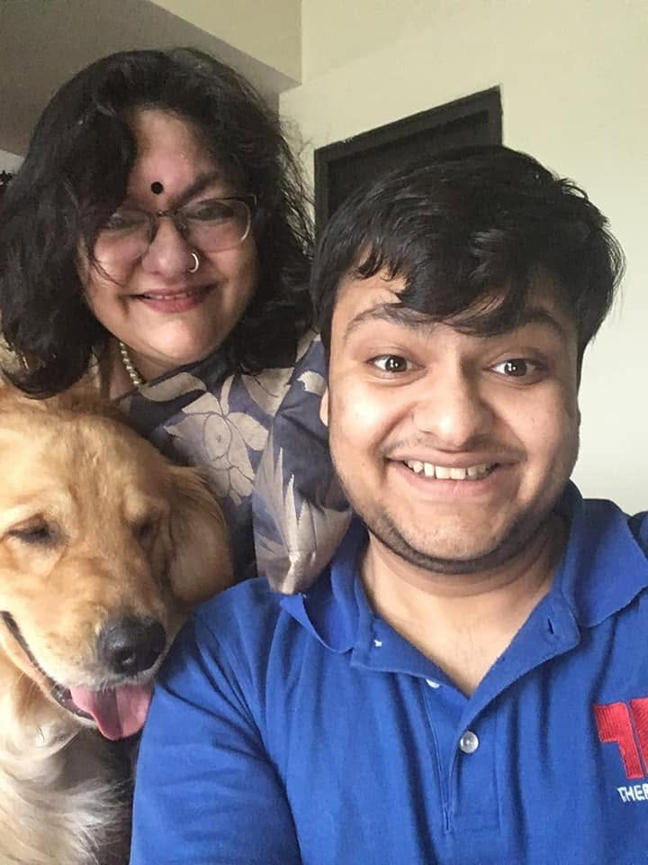
१ ऑक्टोबर २०२० — कॅंसरचं निदान. "प्रत्येक केमोथेरपीला सोबत पुर्ण दिवस जातो त्याचा."
October 2020: stage-3 ovarian cancer is found, a month after Viraj joins a new company.
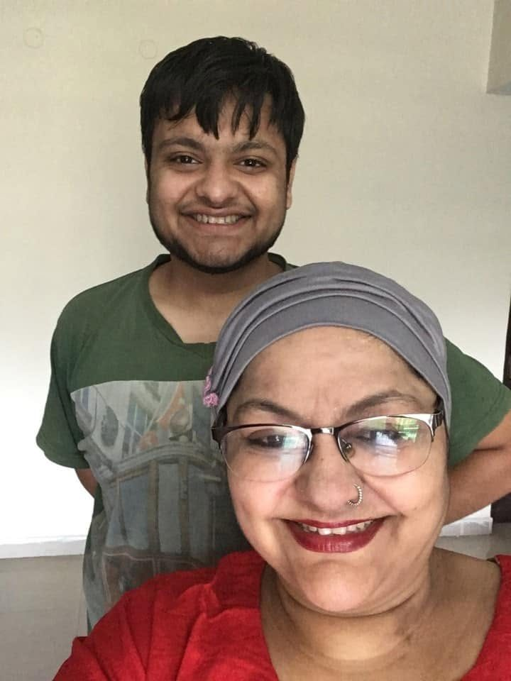
- २०२१
#माझा_मुलगा_माझा_अभिमान
January 2021.
21 May 2021: she and Viraj move from Hyderabad to Bangalore. Photo: November 2021.
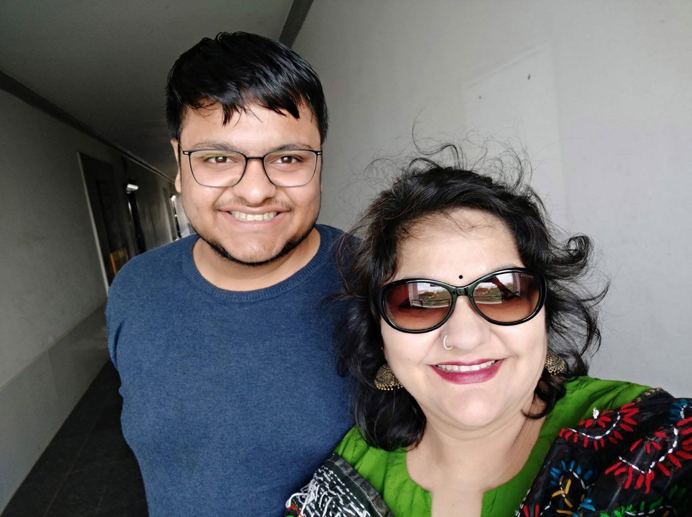
- २०२२
September 2022.
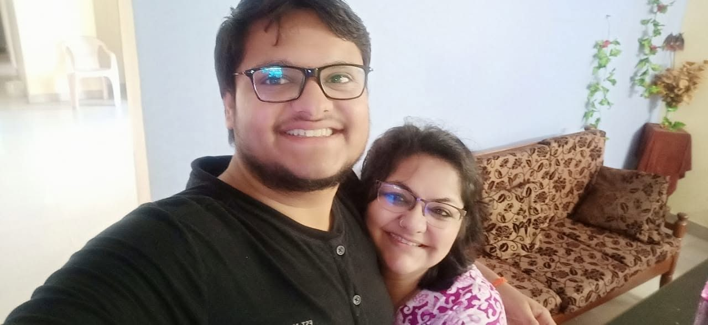
- २०२३
"कोणालाही माझ्या बद्दल अतिशय हेवा वाटायला लावणारी एकमेव गोष्ट ... ती म्हणजे तू....विरज."
Viraj's birthday, 2023.
"लेकराच्या भक्कम खांद्याचा आधार.... सर्वाधिक सुरक्षित."
November 2023.
- २०२४
Her birthday, July 2024.
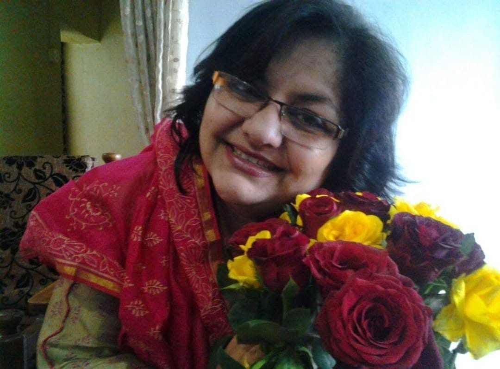
"जन्मोजन्मी हाच मुलगा मिळू दे."
Viraj's birthday, 2024.
- २०२५
July 2025.
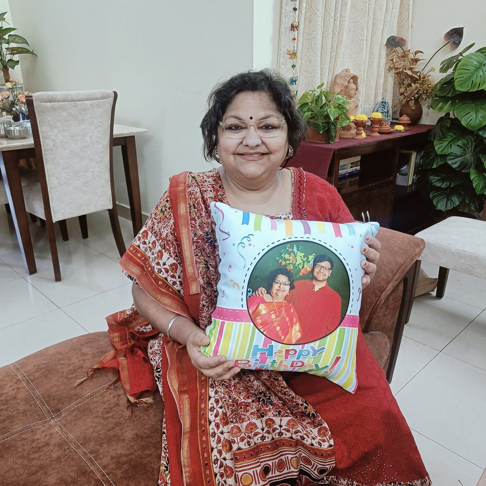
"आज तू ३० पुर्ण केले." — प्रिय विरज.
Viraj turns 30.
- २०२६
उद्या ११ जुलै....
July 2026.
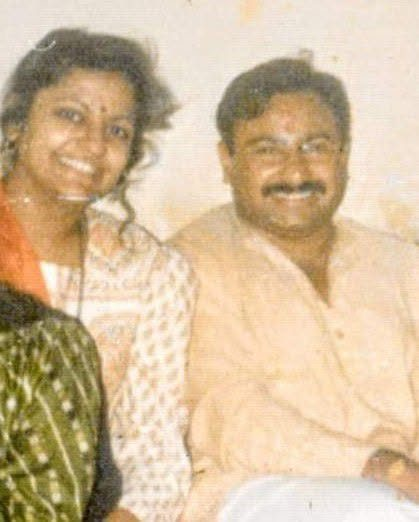
"आज मेरे बच्चे का जन्मदिन हैं."
2 August 2026: her last birthday post for Viraj.